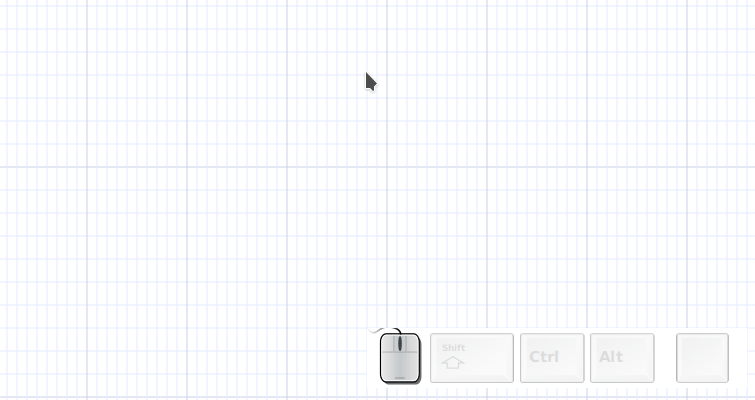
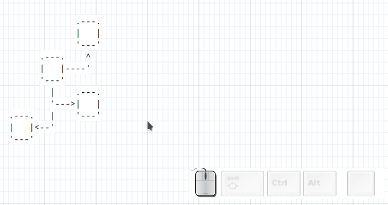
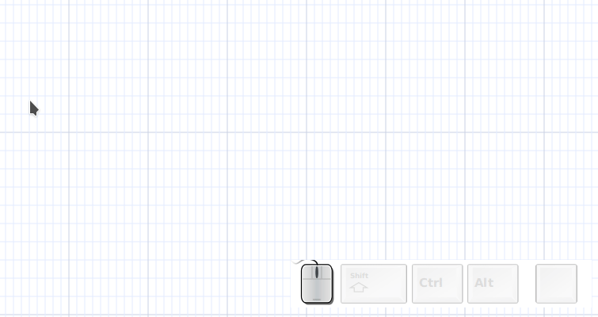
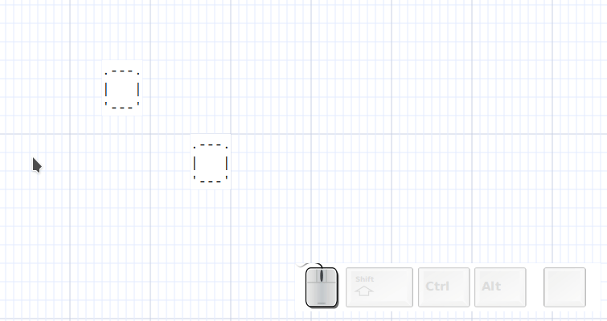

Introduction
___ .-------.
/ | __________________ | Tokyo |
/ /| | / ___/ ___/ / / __ \ '-------' .-----------.
/ ___ |(__ ) /__/ / / /_/ / ^ | Tuju-Tuju |
/_/ |_/____/\___/_/_/\____/ | '-----------'
| ^
.-------. |
.------.---| Malmö |---------' .-------.
| | '-------' | Korba |
v | ^ '-------'
.--------. | | .-------. |
| Dallas | | '-----| Paris |<-----'
'--------' | '-------'
v
.--------.
| Moscow |
'--------'
Asciio allows you to draw ASCII diagrams in a GUI or TUI. The diagrams can be saved as ASCII text or in a format that allows you to modify them later.
Diagrams consist of boxes and text elements connected by arrows. The elements stay connected when you move them around.
Both GUI and TUI have vim-like bindings, the GUI has a few extra bindings that are usually found in GUI applications; bindings can be modified.
ASCII format is easy and universal, many tools exist to manipulate it and even transform it to other formats.
I’ve used it a lot to draw trees and graphs when my hand drawn pictures were not good enough for presentations. Having the possibility to copy and modify the graphs/diagrams makes it possible to present changes in an attractive way.
History
Asciio was born … as a dare; the cool name was coined at a conference in Oslo.
.------.
.-----------| root |---------.
| '------' | other process
| .------------|-------------.
v | v |
.--. | .--. |
.---'--' | .---'--'---. |
| | | | | |
v | | v v |
.--. | link | .--. .--. |
.--'--' .--------------------'--' '--' |
| | | | |
v | | v |
.--. v | .--. |
'--' .--. | '--' |
'--' | |
'--------------------------'
Accessing documentation
Asciio’s documentation is available in multiple formats
-
this HTML documentation, generated by mdbook
-
a manpage, available from within Asciio.
There’s also:
-
a bindings list
-
a short help
-
a “user” defined documentation. «H» Add help box
Asciio is developed, and runs, on both Linux and Windows (cygwin).
Running asciio
$> asciio [file.asciio] # GUI application using Gtk3
$> tasciio [file.asciio] # TUI application
$> asciio_to_text file.asciio # converts asciio files to ASCII
$> text_to_asciio ... # makes an asciio file from text
Command line options
| option | context | |
|---|---|---|
| b | put the input in a box element | text_to_asciio |
| text_separator=s | put the input in a boxed element | text_to_ascioo |
| display_setup_information | verbose setup information | |
| show_binding_override | display binding overrides in terminal | |
| setup_path=s | sets the root of the setup directory | |
| s,script=s | script to be run at Asciio start | |
| p,web_port=s | port for web server | |
| debug_fd=i | debug file descriptor number | |
| add_binding=s | file containing bindings to embedd | |
| reset_bindings | remove all embedded bindings from document | |
| dump_bindings | write the embedded bindings to files | |
| dump_binding_names | display name of embbeded bindings |
Opening Asciio documents from the command line
Asciio Documents and Projects
The Asciio (tabbed) application distinguishes between two file types: individual asciio documents and asciio projects. Understanding this distinction is essential for proper file management.
File Types
Asciio Documents
Asciio documents represent individual diagrams. Each document contains:
- Drawing elements and their properties
- Setup data
Documents are loaded into individual tabs within the application interface.
Asciio Projects
Asciio projects are container that bundle multiple asciio documents together. A project file contains:
- Multiple serialized asciio documents
- Project data specifying tab count and document order
Loading Files from Command Line
Command Line Behavior
Files specified as command-line arguments are processed sequentially. The application automatically detects whether each file is a document or project.
Type Detection Mechanism
File type detection operates through document validation:
- The application attempts to open the file as an asciio project
- Open failure triggers single-document loading
This approach allows transparent handling of both file types without requiring file extension conventions or explicit type specification.
Multiple File Loading
When multiple files are provided via command line:
- Each file is processed independently
- Projects expand into multiple tabs (one per contained document)
- Asciio documents in a tab each
- All loaded files coexist in the same application session
Writing Projects
Project Structure
When saving a project, the application:
- Serializes each open tab’s asciio document
- Generates unique filenames for each document within the archive
- Creates an
asciio_projectdata file containing document count and ordering - Packages all components into a project file
Naming Collision Resolution
During Project Creation
The application implements collision detection when saving projects:
- Documents without titles receive automatic names (
untitled_0,untitled_1, etc.) - Duplicate names trigger automatic suffix generation using random integers (0-9999)
This ensures filesystem-safe uniqueness within the project file.
Save Operations
Project Modified State
The application tracks modifications at two levels:
- Individual document modification (tracked per tab)
- Project-level modification (tab operations, document additions/removals)
File Overwrite Protection
The save mechanism implements defensive overwrite handling:
- Existing filenames trigger confirmation dialogs
- User cancellation aborts the save operation
Application Exit
Modified Content Handling
Application termination with unsaved changes triggers:
- Detection of any modified documents or project structure
- Presentation of save/quit/cancel dialog
Document vs Project Saves
Asciio uses project-level saves during exit. Individual document modifications are captured within the project save operation. You can save individual documents at any time.
Error Handling Behavior
Non-Existent Files
When a non-existent file path is provided on the command line:
- A new empty tab is created
The application launches successfully but the non-existent file produces an empty tab, error is output to the console.
Invalid File Formats
When an existing file contains invalid or corrupted data:
- A new empty tab is created
Error Recovery
Asciio is resilient to bad input:
- Individual file failures do not prevent application launch
- Subsequent command-line files are processed
- Error messages provide diagnostic information to STDERR
Command Line Examples
Single Asciio Document
Command:
asciio diagram.ascii
Behavior:
- Application launches with one document
- no tab is displayed when a single file is loaded
Single Project
Command:
asciio project.asciios
Behavior:
- Application launches with multiple tabs (one per contained document)
- Tab labels reflect individual document names from archive
- Tab order matches the orders of the saved project
Multiple Asciio Documents
Command:
asciio doc1.asciio doc2.asciio doc3.asciio
Behavior:
- Application launches with three tabs
- Each document loads into separate sequential tab
- Tab labels:
doc1.asciio,doc2.asciio,doc3.asciio
Multiple Projects
Command:
asciio project1.asciios project2.asciios
Behavior:
- Application launches with tabs from both projects
- First project’s documents load into initial tabs
- Second project’s documents append to tab bar
- Tab labels reflect individual document names
- Naming collision resolution applies if documents share names
Mixed Asciio Documents and Projects
Command:
asciio header.asciio project.asciios footer.asciio
Behavior:
- Tab sequence:
header.asciio, then project documents, thenfooter.asciio - Project expands into multiple consecutive tabs
- Final tab arrangement reflects command-line order
Project with Document Name Collisions
Command:
asciio project1.asciios project2.asciios
Where both projects contain a document named diagram:
Behavior:
- First
diagramfromproject1.asciioloads with original name - Second
diagramfromproject2.asciioreceives random suffix - Resulting tabs:
diagram,diagram_4721(random number varies) - Collision detection operates at session load time
- Suffix generation prevents tab label conflicts
All Invalid Files
Command:
asciio missing1.ascii0 missing2.asciio missing3.asciio
Behavior:
- Three empty tabs created
- Three error messages to STDERR
- Application remains functional
- User can immediately begin working in empty tabs
- No crash or abnormal termination
Installation
asciio’s is hosted on github
Debian/Ubuntu package
No packages pre-build for distributions yet, work is ongoing.
Manual install on debian based distros.
See the OCI build instruction in Containerfile.
OCI image
user config
A user configuration is copied from ‘repo:OCI/Asciio’ to ‘/root/.config/Asciio/’, it can be modified to suit your needs.
pre-built image
The image is on github
Change <PATH_YOU_WANT_TO_SHARE>, if you want to save your files to your file system, before running the command below.
linux
podman run -it --net=host --env="DISPLAY" --volume="$HOME/.Xauthority:/root/.Xauthority:rw" --volume="$HOME:<PATH_YOU_WANT_TO_SHARE>" ghcr.io/nkh/p5-app-asciio:release asciio
Jypiter notebook
Example of installation and testing.

windows wsl
If using Podman, add github repository to podman in ‘/etc/containers/registries.conf’
[registries.search]
registries = ['ghcr.io']
Install an Xserver in windows. I used VcXsrv and disabled access control.
The IP of Xserv was not correct. Had to use this, to have it report the Windows host virtual IP:
export DISPLAY=$(ip route | grep default | awk '{print $3}'):0
podman run -it --net=host --env="DISPLAY" --volume="$HOME:<PATH_YOU_WANT_TO_SHARE>" p5-app-asciio:release asciio

Windows
In the windows environment, you can use asciio through msys2 or WSL or cygwin.
windows msys2 package
P5-App-Asciio-msys2, Here are the complete packaging and installation instructions.
WSL
The use of WSL is not much different from the Linux environment.However, there are some things that need attention. This link talks about how to connect to the WSL environment and execute GUI programs through remote connections under Windows.
Cygwin
- First install Cygwin.
- Make sure the following components are installed correctly
- x11
- perl
- Gnome
- gun-make
- gcc-g++
- Search for “gcrypt” in all the packages to be installed, and install all the packages that appear.
- Install all dependent modules of asciio
Pay attention when installing perl modules, some may be installed through cpan, but some cannot, and can only be installed manually.
When compiling, the Makefile of several modules has an unrecognized option
-lnsl. removed it when install it manually.
Start asciio by the following method:
startxwin >/dev/null 2>&1 &
export DISPLAY=:0.0
asciio
Interface
Asciio input is from mouse and keyboard bindings, they are defined in a configuration files that you can change.
Asciio’s interface is minimal by design.
keyboard bindings
This is the preferred method, and the fastest. The bindings are vim-like and which make the many bindings much easier to remember. See the Bindings section
mouse bindings
Although work can mostly be done using the keyboard, the mouse is still useful and it’s fast when creating new diagrams. See Working efficiently
popup menus
My least favorite way of using Asciio, it’s slow and cumbersome for most actions. I try to limit the amount of menu and sub menus.
UIs
Asciio offers multiple UIs
- a GUI
- a TUI (under construction)
- a command line interface
There’s even a ticket about a web interface, if you’re a websocket, rpc, minimal interface geek who like Web technology … join us!
GUI

.-------------------------------------------------------------.
| ........................................................... |
| ..........-------------..------------..--------------...... |
| .........| stencils > || asciio > || box |..... |
| .........| Rulers > || computer > || text |..... |
| .........| File > || people > || wirl_arrow |..... |
grid----->......'-------------'| divers > || axis |..... |
| ..................^.....'------------'| ... |..... |
| ..................|...................'--------------'..... |
| ..................|........................................ |
'-------------------|-----------------------------------------'
|
context menu access some commands
most are accessed through the keyboard
Display colors
Access the color group with binding: «zc»
Night Colors
binding: «zcs»
change grid color
binding: «zcg»
change grid background color
binding: «zcg»
Display options
display/hide grid lines
binding: «zg»
display/hide hint lines
binding: «zh»
Displays thicker lines around the selected elements to help you with alignment

Rulers
Access the rule group with binding: «ir»
display/hide ruler
binding: «zr»
Asciio Tab Management

Overview
Asciio provides a comprehensive tab-based workflow system that allows you to work with multiple documents simultaneously within a single application window. Each tab represents an independent drawing canvas, and you can organize, navigate, and manage these tabs efficiently through a variety of operations.
Bindings: Tab Management
Index
Creating New Tabs
Creating new tabs | Duplicating tabs | Closing tabs
Tab Navigation
Sequential navigation | Direct tab access | Jump to last tab
Tab Organization
Moving tabs | Renaming tabs | Tab label visibility
Project Operations
Opening projects | Saving projects | Reading files into tabs
Application Control
Workflow Tips
Organizing multiple documents | Project management strategy
Handling name conflicts | Maximizing canvas space
Tab Creation and Removal
Creating New Tabs
Create a new empty tab to start a fresh drawing. The new tab is appended to the end of the tab bar and automatically receives focus.
Binding: «t» + «n»
The newly created tab begins with default canvas settings and an empty drawing surface. Tab labels are automatically shown when multiple tabs exist.
Duplicating Tabs
Clone the current tab to create an exact copy of your work. This operation duplicates all elements, their positions, properties, and the current canvas state.
Binding: «t» + «c»
The duplicated tab is created as a new tab with identical content. This is useful for creating variations of a design or maintaining snapshots of work in progress. The cloned tab is independent from the original and modifications to either tab do not affect the other.
Closing Tabs
Close operations are handled directly within each document window. Closing a tab with unsaved modifications triggers a save confirmation dialog. The application prevents accidental data loss by prompting for save actions before tab removal.
When closing the last remaining tab, the application follows its exit procedures, including project-level save prompts if modifications exist.
Tab Navigation
Sequential Navigation
Navigate through tabs in sequential order using forward and backward operations.
Binding: «t» + «t»
Move focus to the tab immediately to the right of the current tab. When viewing the rightmost tab, this operation wraps around to the leftmost tab, creating circular navigation behavior.
Binding: «t» + «Shift+T»
Move focus to the tab immediately to the left of the current tab. When viewing the leftmost tab, this operation wraps around to the rightmost tab.
Direct Tab Access
Jump directly to specific tabs by their position index. Tabs are numbered from 0 to 9, allowing instant access to the first ten tabs.
Binding: «t» + «0» through «t» + «9»
Each number key corresponds to a tab position:
- «t» + «0» focuses the first tab
- «t» + «1» focuses the second tab
- «t» + «2» focuses the third tab
- And so on through «t» + «9» for the tenth tab
If you attempt to access a tab index that doesn’t exist (for example, pressing «t» + «5» when only three tabs are open), the operation has no effect and focus remains on the current tab.
Jump to Last Tab
Quickly navigate to the rightmost tab regardless of current position.
Binding: «t» + «$»
This operation is particularly useful when working with many tabs and you need to access the most recently created tab or the last tab in your workspace.
Tab Organization
Moving Tabs
Reorder tabs within the tab bar by moving them left or right. Tab reordering is purely organizational and does not affect tab content or properties.
Binding: «t» + «h»
Moves the current tab one position to the left in the tab bar. If the current tab is already in the leftmost position, this operation has no effect.
Binding: «t» + «l»
Moves the current tab one position to the right in the tab bar. If the current tab is already in the rightmost position, this operation has no effect.
Tab movement operations preserve tab focus. After moving a tab, it remains the active tab in its new position. If a help tab is visible, the application correctly maintains its position tracking during tab reordering.
Renaming Tabs
Assign meaningful names to tabs for easier identification and organization. Tab names appear in the tab label and help distinguish between multiple documents.
Binding: «t» + «Shift+R»
The rename operation prompts for a new tab name. The provided name updates the tab label immediately. Tab names are preserved when saving projects and are used as filenames when archiving documents within project files.
If multiple tabs share the same name when saving a project, the application automatically applies numeric suffixes to ensure unique filenames within the archive.
Tab Label Visibility
Control the visibility of tab labels to maximize drawing canvas space or show tab organization.
Binding: «t» + «Shift+L»
Tab label visibility toggles between shown and hidden states. When working with a single tab, labels are automatically hidden by default since no navigation is necessary. Opening a second tab automatically shows labels to facilitate navigation.
Hidden labels do not affect tab functionality. All navigation and management operations work identically regardless of label visibility state.
Project Operations
Opening Projects
Load an existing project file into the application. Project files contain multiple documents that are extracted and opened as individual tabs.
Binding: «t» + «e»
The operation presents a file selection dialog. Upon selecting a project file, the application prompts to save any unsaved work in currently open tabs. After confirmation, existing tabs are closed and the project’s documents are loaded.
Each document from the project opens in a sequential tab with its preserved name. Tab order matches the document order stored in the project metadata. The application window title updates to reflect the opened project filename.
If the project file is invalid or corrupted, appropriate error messages are displayed and the operation is aborted.
Saving Projects
Save all open tabs as a unified project file. This operation captures the entire workspace state including all documents and their organization.
Binding: «t» + «w»
The save operation checks for modifications at both the project level (tab operations, additions, removals) and document level (content changes within tabs). If no modifications exist, the operation completes immediately without prompting.
For modified projects, the application uses the current project filename if one exists. If no project filename is associated with the current workspace, or if you explicitly request “save as” functionality, a file selection dialog appears prompting for a filename.
When saving to an existing file, a confirmation dialog asks whether to overwrite the file. Canceling at this point aborts the save operation without modifying any files.
Successful save operations reset all modification flags for both the project and individual documents.
Binding: «t» + «Shift+W»
Force the file selection dialog to appear regardless of whether a project filename already exists. This allows saving the current workspace as a new project file while preserving the original.
Reading Files into Tabs
Load individual document files or project files into the current workspace without closing existing tabs.
Binding: «t» + «r»
The read operation presents a file selection dialog. The selected file is loaded according to its type:
Single Document Files: A new tab is created and the document content is loaded into it. The new tab is appended to the end of the tab bar.
Project Files: All documents within the project are extracted and each opens in its own new tab. These tabs are appended sequentially to the existing tab bar.
Unlike the open project operation, reading files does not close existing tabs or prompt for save operations. This allows you to progressively build a workspace by loading multiple files from different sources.
If a loaded document name conflicts with an existing tab name, a numeric suffix is automatically appended to ensure unique identification.
Application Control
Exiting the Application
Close the application and terminate the session. The exit operation provides safeguards against data loss through modification checking and save prompts.
Binding: «t» + «q»
The application checks for unsaved modifications in both the project structure (tab organization changes) and individual documents (content changes). If modifications exist, a dialog appears with three options:
- Save and Quit: Saves the entire project before exiting. If no project filename exists, a file selection dialog prompts for the destination filename.
- Quit Without Saving: Exits immediately, discarding all unsaved changes.
- Cancel: Aborts the exit operation and returns to the workspace.
Binding: «t» + «Shift+Q»
This operation bypasses all save prompts and modification checks, exiting the application immediately. All unsaved work is discarded without confirmation. Use this operation only when you are certain you want to abandon current work.
Workflow Tips
Organizing Multiple Documents
When working with related documents, use tab reordering to group them logically. Position frequently accessed tabs toward the left for easier access with direct tab shortcuts («t» + «0» through «t» + «9»).
Project Management Strategy
Use the “read file” operation («t» + «r») to incrementally build a workspace from multiple sources. Once your workspace is organized, save it as a project («t» + «w») to preserve the entire configuration for future sessions.
Handling Name Conflicts
When loading multiple projects that contain identically named documents, the application automatically prevents conflicts by appending numeric suffixes. You can rename tabs afterward («t» + «Shift+R») to provide more meaningful distinctions.
Maximizing Canvas Space
When tab names are not needed for orientation, you can hide tab labels («t» + «Shift+L»). Labels can be toggled back on at any time without affecting functionality.
Asciio hides the tab label if only one tab exists.
TUI

The TUI interface is a work in progress. Drawing graphs in a terminal (without mouse) is more difficult than it seem, I’m actively working on creating better bindings to make as smooth as when using a mouse.
- mouse emulation
- differences
- dialogs
- manpage

Asciio TUI and Vim
You can call Asciio from vim and insert your diagram.
map <leader><leader>a :call TAsciio()<cr>
function! TAsciio()
let line = getline('.')
let tempn = tempname()
let tempnt = tempn . '.txt'
let temp = shellescape(tempn)
let tempt = shellescape(tempnt)
exec "normal i Asciio_file:" . tempn . "\<Esc>"
if ! has("gui_running")
exec "silent !mkdir -p $(dirname " . temp . ")"
exec "silent !cp ~/.config/Asciio/templates/empty.asciio ". temp . "; tasciio " . temp . "; asciio_to_text " . temp . " >" . tempt
exec "read " . tempnt
endif
redraw!
endfunction
CLI
asciio can be used and controlled from the command line.
asciio_to_text
Converts an existing ‘.asciio’ file/project to ASCII and display it in the terminal
text_to_asciio
Converts files, or text, to asciio elements.
Converting Files
text_to_asciio filename.asciio file [file ...]
The command will create a box elements containing the content each file and save it in ‘filename.asciio’.
Converting text
A text stream is read from STDIN, split into chunks, and converted into asciio elements.
The resulting asciio file is output to STDOUT.
some_command | text_to_asciio > file.asciio
In this mode, text_to_asciio accepts the following options:
| option | default | |
|---|---|---|
| -b | create a box element | create a text element |
| text_separator | perl regular expression used to split | “\n” |
scripting interface
You can create these types of scripts for asciio:
-
a script that modifies a running asciio
- you can send script to it via a POST to asciio web server
- you can, from the UI, choose a script to be run
-
a script in which you can create an asciio, without UI, and insert elements in it
- the result can be saved in an ‘.asciio’ file
- the result can be printed as ASCII in your terminal
See the Scripting section for detailed information.
Unicode support
Asciio supports Unicode is a work under progress; including support for Asian languages, thanks to the co-developer who writes in these languages, but you may need a font that supports them.
https://github.com/be5invis/Sarasa-Gothic/


In the examples above the box is drawn with unicode characters, the box is oversized by design, it shrinks and expands properly.

If you want to align Thai, or Arabic, or Hebrew, under normal circumstances, the default monospaced font of the system is fine. If you find that it cannot be aligned, you can download a font that can align them.
When displayed in exported software, you also need a font that aligns them.
.-----. .----------------.
| abc |----->| สวัสดีเราเคยพบกัน |
'-----' '----------------'
|
|
|
| .---------------.
'-->| שלום, נפגשנו |
'---------------'
|
|
.------------------. |
| مرحبا هل التقينا |<-------------'
'------------------'
Stencils
Asciio boxes
Elements

popup menu
You can access some functionality via the popup menu.

auto-shrink
If the text is changed, the size of the box will change to fit.
disable connectors
Enable or disable the possibility to connect to the box.
disable optimize
A standard box had four connectors, Asciio optimizes the arrow routes so they don’t cross the box. You can disable that optimization.
connect inside element borders
Allow connection to be made anywhere inside the element borders , not just the connectors.

rotate box/text

Types
A box
Binding: «ibb» Add box
A box with the frame drawn with Unicode characters
Binding: «iub» Add unicode box
A text
Texts are just boxes without frames.
Binding: «it» Add text
A shrink-box
A box which is already has auto-shrink set
Binding: «ibs» Add shrink box
Asciio if and process boxes
| element | binding |
|---|---|
| Add if box | «iei» |
| Add process box | «iep» |
if-box and process-box

Asciio exec-boxes
An “exec-box” is and object that lets you run an external command and put its output in a box. There are different types of exec-boxes explained below.
Multi command
Binding: «ib» «ctl-e» Add exec box
The simplest exec-box accepts multiple commands, one per line. It will redirect stderr for each command.
Editing the box will let you edit the command.

Verbatim
Binding: «ib» «ctl-v» Add exec box verbatim
This exec-box doesn’t redirect stderr, you can use it for commands that span multiple line or commands that take a multi line input
Editing the box will let you edit the command.

Once
**Binding: «ib» «ctl-o» Add exec box verbatim once
This exec-box will run your commands once, editing the box will let you edit the command’s output.
Add line numbers
Binding: «ib» «ctl-l» Add line numbered box
This is an example of a custom stencil which will add line numbers to your input.

Examples
Using previously generated output
Use ‘cat your_file’ as the command in the exec-box.
Tables
If you have data you want to use in a table, the simplest is to run an external command (there are tens of ASCII table generator in perl, go, JS, …) and insert the result in a text element.
+------------+------------+------------+------------+
| input_size ‖ algorithmA | algorithmB | algorithmC |
+============+============+============+============+
| 1 ‖ 206.4 sec. | 206.4 sec. | 0.02 sec. |
+------------+------------+------------+------------+
| 250 ‖ - | 80 min. | 2.27 sec. |
+------------+------------+------------+------------+
I you just want to type your table data, use an exec-box to pass your table data to you favorite Markdown formatter.
If you don’t have a favorite formatter or it doesn’t render the tables as you want them, Asciio installs md-table-formatter which may do just what you want.
md-table-formatter can render in multiple style and has some rendering options.
Insert an exec-box, remove all borders, and type the following below, you can re-edit your command later.
md-table-formatter will parse your table description, align, and format your table
cat <<EOT | md-table-formatter
| Operation | Bg |
| ----------- | ----- |
| Edit selected element | douck |
| Add to selection | C00-1 |
| Quick link | 0A0-1 |
| Duplicate elements | 0AS-1 |
| Insert flex point (in arrow) | CA0-1 |
EOT


FIGlet
Figlet generates large letters out of ordinary text.

You can specify a font with the -f option.
$ ls /usr/share/figlet/
646-ca.flc 646-hu.flc 646-se2.flc big.flf lean.flf smslant.flf
646-ca2.flc 646-irv.flc 646-yu.flc block.flf mini.flf standard.flf
646-cn.flc 646-it.flc 8859-2.flc bubble.flf mnemonic.flf term.flf
646-cu.flc 646-jp.flc 8859-3.flc digital.flf moscow.flc upper.flc
646-de.flc 646-kr.flc 8859-4.flc frango.flc script.flf ushebrew.flc
646-dk.flc 646-no.flc 8859-5.flc hz.flc shadow.flf uskata.flc
646-es.flc 646-no2.flc 8859-7.flc ilhebrew.flc slant.flf utf8.flc
646-es2.flc 646-pt.flc 8859-8.flc ivrit.flf small.flf
646-fr.flc 646-pt2.flc 8859-9.flc jis0201.flc smscript.flf
646-gb.flc 646-se.flc banner.flf koi8r.flc smshadow.flf
For example, we want to specify this font: slant
This is the exported effect:
.-----------------------------------.
| _ _ _ |
| / \ ___ ___ (_)(_) ___ |
| / _ \ / __| / __|| || | / _ \ |
| / ___ \ \__ \| (__ | || || (_) | |
| /_/ \_\|___/ \___||_||_| \___/ |
| |
'-----------------------------------'
.------------------------------------.
| ___ _ _ |
| / | _____ _____ (_)(_)____ |
| / /| | / ___// ___// // // __ \ |
| / ___ | (__ )/ /__ / // // /_/ / |
| /_/ |_|/____/ \___//_//_/ \____/ |
| |
'------------------------------------'
Diagon
Diagon transforms markdown expressions into an ascii-art representation.
Mathematical Expressions

File Tree
Use exec verbatim box to input multiple lines.


plantuml
Asciio arrows
| element | binding |
|---|---|
| Add arrow | «ia» |
| Add Unicode arrow | «iua» |
| Add angled arrow | «iA» |
wirl-arrow
Rotating the end clockwise or counter-clockwise changes its direction.

multi section wirl-arrow
A set of whirl arrows connected to each other.

angled-arrow and axis

Note that an axis doesn’t connect.
Connecting lines
A specialized wirl-arrow with no head nor tail.
| element | binding |
|---|---|
| Add ASCII line | «il» |
| Add Unicode line | «iL» |
| Add Unicode bold line | «i+Alt-l» |
| Add Unicode double line | «i+Shift+Alt-l» |

Non connecting lines
A specialized wirl-arrow with no head nor tail and auto-connection turned off, it’s often used to draw the table in the crossing mode.
| element | binding |
|---|---|
| Add ASCII non-connecting line | «ik» |
| Add Unicode non-connecting line | «iK» |
| Add Unicode non-connecting bold line | «i+Alt-k» |
| Add Unicode non-connecting double line | «i+Shift+Alt-K» |
ascii line
----------------------.
|
|
|
|
|
unicode line
─────────────────────────╮
│
│
│
│
│
unicode bold line
━━━━━━━━━━━━━━━━━━━━━━━┓
┃
┃
┃
┃
unicode double line
═══════════════════════════╗
║
║
║
║
║
Example of non-connecting lines in crossing mode
╔═════╦═════╦══════╦═════╦════╦═════╗
║ ║ ║ ║ ║ ║ ║
╠═════╬═════╬══════╬═════╬════╬═════╣
║ ║ A ║ ║ B ║ ║ ║
╠═════╬═════╬══════╬═════╬════╬═════╣
║ ║ C ║ ║ ║ ║ ║
╠═════╬═════╬══════╬═════╬════╬═════╣
║ ║ ║ ║ ║ D ║ ║
╠═════╬═════╬══════╬═════╬════╬═════╣
╚═════╩═════╩══════╩═════╩════╩═════╝
Wirl arrow dynamic configuration
The wirl arrow can be dynamically configured by using the keyboard bindings. Some configuration can be done via the popup menus but we are working eliminating them in favor of keyboard bindings.
The keyboard bindings can have changed, best is to check them in the default_bindings.pl configuration file.
You can also define your own bindings.
Changing the arrow type
binding: << e >> + << w >> + chose the arrow type
Controlling the connectors
binding: << a >> + chose the connection command
-
start enable connection
-
start disable connection
-
end enable connection
-
end disable connection
-
enable diagonals
-
disable diagonals
-
Start flip enable connection
-
End flip enable connection
changing the arrow connector
binding: << a >> + << c >> + (<< s >> or << e >>) + chose the arrow connector
- << a >> group ‘arrow’
- << c >> sub group ‘connector’
- << s >> sub group ‘start_connector’
- << e >> sub group ‘end_connector’
fixed connector shape
A single character will be used as the connector regardless of the arrow geometry
dynamic connector shape
A set of character that will be used depending on the arrow geometry
RIGHT DOWN LEFT UP 45 135 225 315
[ ['-', '|', '-', '|', '/', '\\', '/', '\\'] ],
Pseudo-connectors
Pseudo-connectors are a one-glyph-text boxes, used by git mode for example, which can also be used to add connectors to user-created groups.
- create a pseudo-connector
- change its glyph if necessary
- place it
- group all your elements
pseudo-connector with 4 “optimized” connectors
| Binding | Connector |
|---|---|
| o | «ic» |
| * | «iC» |
pseudo-connector with one connector
Use a “center connect box”

Using the character under the current cursor to Create a “center connect box”. Visually, this connector looks like it is one piece with the underlying element.

Example
Element connectors
It is possible to add custom connectors when creating an element stencil, see setup/Asciio for the default stencils.
create_box
(
NAME => 'rabbit paw',
TEXT_ONLY => <<'TEXT'
(\_/)
(O.o)
/>
TEXT
,
RESIZABLE => 0,
WITH_FRAME => 0,
DEFAULT_CONNECTORS => 0,
CONNECTORS => [[2, -1, -1, 2, -1, -1, 'paw']]
),
CONNECTORS
[ # An array of connector
[
2, # X coordinate
-1, # percentage of width, -1 to disabe
-1, # offset added to position if perventage is used
2, # Y coordinate
-1, # same as above for Y
-1, # same as above for Y
'paw' # connector name
],
[
# next connector
...
],
]
The class also has these functions:
- add_connector, dynamically add connector
- remove_connector, by name
Example
Interactive Connector Operations

Adding connectors
- Select a single element
- Enter element group with «e»
- Enter element add connectors sub group whie «C»
- Move the mouse to where you want to add a connector
- Press the left mouse button to add a connector
- Press «Escape» to exit group
Connectors can be added up to on character outside the element.
Removing connectors
- start with the same steps as “Add connectors” above
- Press the right mouse button to delete the connector
Some connectors can’t be delete.
- The default 4 connectors of the box element
- Connectors that are connected to another element
Asciio shapes
You can add triangles, rombus, and elipses via the popup menu or use the bindings below:
| element | binding |
|---|---|
| Add rhombus | «ir» |
| Add ellipse | «ie» |

Asciio image box
The purpose of an image box is to have a background image; it’s ideal as a background when creating ASCII Art in Pen Mode.
- Image boxes have grayscale and transparency settings
- Images aren’t exported instead a text placeholders will be exported

Bindings
Prefix: All operations require pressing «I» to enter the image Box group.
| action | binding |
|---|---|
| Enter image box group | «I» |
| All bindings |
Create an image box from a file
| action | biding |
|---|---|
| inserted from file | «i» |

Image box operations
Image boxes, like ordinary boxes, support resizing and moving.

image box visual controls sub group
| action | binding |
|---|---|
| rendering control | «<c» |
| action | bingding |
|---|---|
| increase gray scale | «g» |
| decrease gray scale | «G» |
| increase alpha | «a» |
| decrease alpha | «A» |
| revert to default | «o» |

Freezing image boxes
Bindings:
| action | binding |
|---|---|
| freeze to background | ’«f»` |
| thaw | ’«t»` |
Frozen image boxes
- can’t be resized
- can’t be moved
- are put in the background
- they can’t be deleted if frozen and in the background, thaw to delete

Copy and paste the image from the clipboard
Under Linux system, we need to install the xclip tool.
Copy an image to the clipboard through one of the following commands:
- If the image is in
PNGformat then use the following command
xclip -selection clipboard -t image/png -i image.png
Only PNG format is supported.
Under the Windows system, we can directly use the system function to copy a
picture.
Use Ctrl+v directly in the canvas to paste the image into the canvas,
and it will automatically create an image box.

verbatim objects
Text elements with ASCII art or normal text. Asciio has as set of verbatim elements in its stencils which can be accessed via the popup menu, or you can add a binding if you use them often. The element’s text can be edited. You can also use any Ascii-art/Text you have in a file via an exec-box.

___________
1 //////|\\\\\\
2 '.-----------.'
3 | ___ |
4 (\_/) Zzz | [] | | [] | (\_/)
5 (-.-) |____|_|____| (o.o)
6 (> <) (> <)
7
8
9
0
scales
Simple text elements representing scales/rulers that you can use to scale or align, see hints, your elements.
1 1234567890
2
3 1___5____0____5____0____5____0____5____0____5____0
4
5
6
7
8
9
0
User stencils
You can create stencils that you are going to reuse, details of how to do it in the best way can be found in the Configuration section.
Here are three examples:
integrating Asciio and ditaa (third party example)
There was a page (Corn Empire) where a user detailed how to make an integration.
That page is not online anymore, I modified a copy for this documentation.
If you are the original author please contact me so I can give you credit.
Introduction
You found this page because you are looking for more information on installing asciio and ditaa, and then modifying asciio to better interact with ditaa. Well you came to the right place. This guide will take you step-by-step through installing both tools, and modifying asciio to output diagrams to ditaa.
Modifying asciio
Make yourself familiar with ditaa and asciio, you may see the benefit of outputting asciio text files that are compatible with ditaa without modification. Or better yet, generate your diagrams for you when you save :) . This section will explain how to do all of that and more!
Adding in a Ditaa Stencil
You will need to create a new stencils file to create boxes and arrows that are compatible with ditaa (you could optionally modify the standard files if you will only use asciio for ditaa purposes). I got the idea for the modifications from here: http://strawp.net/archive/geeking-out-with-diagrams-in-ascii/
A Standard Box
Go to the App/Asciio/setup/stencils (in the /usr/share/perl5/ or /usr/share/perl/5.10.0/) directory, and find the asciio file. Using for favourite editor, copy and paste the standard box code into a new file called ditaa. Then make the following changes to the standard box code in this new file:
To change the corners, modify line 14/33 and change . to + and modify line 17/36 and change ' to +.
Then modify lines 5 and 7 in the same way. Replace the . with + and the ' with +.
Or you could optionally just copy and paste the completed code below (the $VAR1 = [ is only needed once, and just starts off the file, the ]; at the end of the block, ends the file. All bless calls should be between these lines) :
$VAR1 = [
bless( {
'HEIGHT' => 3,
'TEXT' => '+---+
| |
+---+',
'NAME' => 'ditaabox',
'WIDTH' => 5,
'TEXT_ONLY' => '',
'TITLE' => '',
'BOX_TYPE' =>
[
[TRUE, 'top', '+', '-', '+', TRUE, ],
[FALSE, 'title separator', '|', '-', '|', TRUE, ],
[TRUE, 'body separator', '| ', '|', ' |', TRUE, ],
[TRUE, 'bottom', '+', '-', '+', TRUE, ],
] ,
'EDITABLE' => 1,
RESIZABLE => 1,
X_OFFSET => 0, Y_OFFSET => 0,
}, 'App::Asciio::stripes::editable_box2' ),
];
Add Rounded Box
But why stop there? How about we add in a nice ditaa rounded box. Add this code to the ditaa stencil file just below our modified box code:
bless( {
'HEIGHT' => 3,
'TEXT' => '/---\\
| |
\\---/',
'NAME' => 'roundedbox',
'WIDTH' => 5,
'TEXT_ONLY' => '',
'TITLE' => '',
'BOX_TYPE' =>
[
[TRUE, 'top', '/', '-', '\\', TRUE, ],
[FALSE, 'title separator', '|', '-', '|', TRUE, ],
[TRUE, 'body separator', '| ', '|', ' |', TRUE, ],
[TRUE, 'bottom', '\\', '-', '/', TRUE, ],
] ,
'EDITABLE' => 1,
RESIZABLE => 1,
X_OFFSET => 0, Y_OFFSET => 0,
}, 'App::Asciio::stripes::editable_box2' ),
Add ditaa Arrows
The asciio arrows don’t jive well with ditaa. You can add this in the ditaa stencil file, it is based on the whirl arrow:
bless({
'NAME' => 'ditaa_arrow',
'HEIGHT' => 6,
'WIDTH' => 17,
'POINTS' => [[16,5]],
'SELECTED' => 0,
'EDITABLE' => 1,
'ALLOW_DIAGONAL_LINES' => 0,
'POINTS_OFFSETS' => [[0,0]],
'DIRECTION' => 'down-right' ,
'ARROW_TYPE' =>
[
['origin', '', '*', '', '', '', TRUE],
['up', '|', '|', '', '', '^', TRUE],
['down', '|', '|', '', '', 'v', TRUE],
['left', '-', '-', '', '', '<', TRUE],
['upleft', '|', '|', '\\', '-', '<', TRUE],
['leftup', '-', '-', '\\', '|', '^', TRUE],
['downleft', '|', '|', '/', '-', '<', TRUE],
['leftdown', '-', '-', '/', '|', 'v', TRUE],
['right', '-', '-','', '', '>', TRUE],
['upright', '|', '|', '/', '-', '>', TRUE],
['rightup', '-', '-', '/', '|', '^', TRUE],
['downright', '|', '|', '\\', '-', '>', TRUE],
['rightdown', '-', '-', '\\', '|', 'v', TRUE],
['45', '/', '/', '', '', '^', TRUE, ],
['135', '\\', '\\', '', '', 'v', TRUE, ],
['225', '/', '/', '', '', 'v', TRUE, ],
['315', '\\', '\\', '', '', '^', TRUE, ],
],
'ARROWS' =>
[
bless(
{
'HEIGHT' => 6,
'STRIPES' =>
[
{'TEXT' => '|
|
|
|
|
\'',
'HEIGHT' => 6,
'Y_OFFSET' => 0,
'WIDTH' => 1,
'X_OFFSET' => 0}
,
{
'TEXT' => '--------------->',
'HEIGHT' => 1,
'Y_OFFSET' => 5,
'WIDTH' => 16,
'X_OFFSET' => 1
}
],
'WIDTH' => 17,
'END_X' => 16,
'ARROW_TYPE' =>
[
#name: $start, $body, $connection, $body_2, $end
['origin', '', '*', '', '', '', TRUE],
['up', '|', '|', '', '', '^', TRUE],
['down', '|', '|', '', '', 'v', TRUE],
['left', '-', '-', '', '', '<', TRUE],
['upleft', '|', '|', '\\', '-', '<', TRUE],
['leftup', '-', '-', '\\', '|', '^', TRUE],
['downleft', '|', '|', '/', '-', '<', TRUE],
['leftdown', '-', '-', '/', '|', 'v', TRUE],
['right', '-', '-','', '', '>', TRUE],
['upright', '|', '|', '/', '-', '>', TRUE],
['rightup', '-', '-', '/', '|', '^', TRUE],
['downright', '|', '|', '\\', '-', '>', TRUE],
['rightdown', '-', '-', '\\', '|', 'v', TRUE],
['45', '/', '/', '', '', '^', TRUE, ],
['135', '\\', '\\', '', '', 'v', TRUE, ],
['225', '/', '/', '', '', 'v', TRUE, ],
['315', '\\', '\\', '', '', '^', TRUE, ],
],
'END_Y' => 5,
'DIRECTION' => 'down-right'
}, 'App::Asciio::stripes::wirl_arrow' ),
],
}, 'App::Asciio::stripes::section_wirl_arrow' ) ,
Add Colours and Special Shape Codes
All of the above will give you the core functionality of ditaa into asciio. But what about some basic colour tags, and shape codes. I’ve created a special stencil file for those. You can copy this below, and place it in a file called ditaatags next to the asciio stencil file.
my @ascii =
(
'shapes/document' => <<'EOA',
{d}
EOA
'shapes/storage' => <<'EOA',
{s}
EOA
'shapes/input_output' => <<'EOA',
{io}
EOA
'shapes/tr' => <<'EOA',
{tr}
EOA
'shapes/o' => <<'EOA',
{o}
EOA
'shapes/mo' => <<'EOA',
{mo}
EOA
'shapes/c' => <<'EOA',
{c}
EOA
'colours/Red' => <<'EOA',
cRED
EOA
'colours/Blue' => <<'EOA',
cBLU
EOA
'colours/Pink' => <<'EOA',
cPNK
EOA
'colours/Black' => <<'EOA',
cBLK
EOA
'colours/Green' => <<'EOA',
cGRE
EOA
'colours/Yellow' => <<'EOA',
cYEL
EOA
) ;
my @boxes ;
use App::Asciio::stripes::editable_box2 ;
for(my $ascii_index = 0 ; $ascii_index < $#ascii ; $ascii_index+= 2)
{
my $box = new App::Asciio::stripes::editable_box2
({
TEXT_ONLY => $ascii[$ascii_index + 1],
EDITABLE => 1,
RESIZABLE => 1,
}) ;
$box->set_box_type([map{$_->[0] = 0; $_} @{$box->get_box_type()}]) ;
$box->shrink() ;
$box->{'NAME'} = $ascii[$ascii_index] ;
push @boxes, $box ;
}
[@boxes] ;
Once these have been added, you need to modify the setup.ini file to point to the new stencils. To do that, run the following commands:
cd .. sudo vim setup.ini Where it says ‘stencils/divers’, add on the next line, ‘stencils/ditaa’, and then ‘stencils/ditaatags’,. Your new file should look like this:
{
STENCILS =>
[
'stencils/asciio',
'stencils/computer',
'stencils/people',
'stencils/divers',
'stencils/ditaa',
'stencils/ditaatags',
],
ACTION_FILES =>
[
'actions/align.pl',
'actions/clipboard.pl',
'actions/debug.pl',
'actions/new_elements.pl',
'actions/elements_manipulation.pl',
'actions/file.pl',
'actions/mouse.pl',
'actions/colors.pl',
'actions/unsorted.pl',
'actions/animation.pl',
'actions/context_menu_multi_wirl.pl',
'actions/context_menu_box.pl',
'actions/context_menu_rulers.pl',
],
HOOK_FILES =>
[
'hooks/canonize_connections.pl',
],
ASCIIO_OBJECT_SETUP =>
[
'asciio_object/basic.pl',
],
IMPORT_EXPORT =>
[
'import_export/ascii.pl',
'import_export/perl.pl',
'import_export/png.pl',
],
}
Modifying Saving
It is nice to generate a text file of the data in case you need to make further tweaks before running it through ditaa. It is also required if you want to generate .pngs on the fly of your diagrams.
Go to App/Asciio/setup/actions and load up the file.pl file.
On line 65, replace the original saving code with the following:
#$new_title = $self->save_with_type($elements_to_save, $type, $file_name) ;
## Regardless of previous stuff, save one asciio file and one asciio.<ext>.txt ascii file
## Courtesy of Strawp of http://strawp.net/archive/geeking-out-with-diagrams-in-ascii/
$new_title = $self->save_with_type($elements_to_save, "asciio", $file_name) ;
$new_title = $self->save_with_type($elements_to_save, "txt", $file_name.".txt") ;
## Run ditaa to convert text version into nice copy
## Use this if you have Proc::Background available. Otherwise, use the system call below.
#use Proc::Background;
#my $proc1 = Proc::Background->new("c:\\bin\\ditaa.bat \"".$file_name.".txt\" \"".$file_name.".png\"");
#my $proc1 = Proc::Background->new("java -jar /home/thomas/programs/ditaa/ditaa0_9.jar \"".$file_name.".txt\" \"".$file_name.".png\"");
## This call converts while saving. Slows down save time. Replace the path below with your path to ditaa.jar
## You can add any special parameters here that you commonly use as well.
## Use this command if you unzipped the .jar file
system("java -jar /home/thomas/programs/asciio-ditaa/ditaa0_9.jar \"".$file_name.".txt\" \"".$file_name.".png\"");
## Use this command if you installed the .deb.
#system("ditaa \"".$file_name.".txt\" \"".$file_name.".png\"");
Using the New Setup
Now that you have made all of your tweaks, you are ready to start using your asciio/ditaa combo! Start by making a simple diagram. Here is one below:
Notice when you save this file for the first time:
Several files are created at first. As well as our rendered image.
Now, lets spice it up with some colour and some shapes. Use the right click menu to add the document tag to each of the items labelled document. To do this you will need to:
Right click and select stencils → ditaatags → shapes → document Drag the {d} over the first document. I suggest you group any shapes, and shape modifiers by using CTRL+G once you set them up. If you do this, all of your pieces will move around if you have to tweak your image. Grouping involves selecting each item (hold shift while clicking each item), then press CTRL+G on your keyboard. This will cause this group of items to change background colour, and if you move one item, they will all move together. (You can ungroup by pressing CTRL+U) Add another {d} to the other document. If your item is falling behind the item you want, you can press CTRL+F to bring it to the foreground. Or CTRL+B to push the item on top into the background. Now lets add some colour. Right click, and add some colour tags to the documents. As you save, you will notice the .png updates automatically.
Here is your final work of art:
Troubleshooting
asciio Won’t Load File I’ve noticed that if you modify the stock asciio shapes (either through the gui itself, or in the stencils file) often times if you launch asciio, and then try to load a file with altered shapes, it will fail to load. It generates this output in the terminal:
thomas@thomas-desktop:~/programs/asciio-ditaa$ asciio Using setup directory:‘/usr/share/perl5/App/Asciio/setup/’ running action ‘Open’. load_file: can’t load file ‘/home/thomas/programs/asciio-ditaa/saves/test’: Unrecognized character \x8E in column 23827 at (eval 105) line 372. You can still get asciio to open, you just need to launch it with the file you want to load. So either launch it by typing something like:
thomas@thomas-desktop:~/programs/asciio-ditaa$ asciio /home/thomas/programs/asciio-ditaa/saves/test Using setup directory:‘/usr/share/perl5/App/Asciio/setup/’ running action ‘Open’. Or launch from your file manager. In my case, Nautilus:
asciio Forgets Where I Saved
When loading asciio for the first time, and saving, I find that asciio forgets where I saved the document. It always returns to the original launching location.
To avoid this, I’d recommend that after your first save, you reopen asciio by using one of the two procedures mentioned above. This will allow it to remember where you are working, and the Save function will work correctly.
Editing elements text and attributes
Asciio has two editing mode, Dialog and Inline, the default mode is Dialog.
Dialog editing
Binding: Return, double-click
Asciio opens a dialog which lets you set:
- boxing options
- title
- text

Inline editing
Binding: Return, double-click
In this mode you can only edit the text.

Alternate editing
You can edit in the other mode with these bindings:
- ctl + Return
- ctl + double-click
Changing mode
To change the mode during the session use:
Binding: «zi»
Setting the editing mode in the user configuration
EDIT_TEXT_INLINE => 0,
EDIT_TEXT_INLINE => 0Indicates that the default editing mode isDialog editingEDIT_TEXT_INLINE => 1Indicates that the default editing mode isInline editing
Markup mode
We can use color in asciio, But if exported, the color information will be lost. The markup mode adds marks in the chart, and these marks can be retained when exporting, so that special effects can be displayed in some specific software.
Use markup mode
To use marks in the chart, turn on this option in the configuration.The markup enable variable is the basic attribute of the chart and cannot be changed at runtime.
USE_MARKUP_MODE => 'zimwiki',
If you do not need to use any markup mode, please keep this variable empty.
USE_MARKUP_MODE => '',
Currently, only zimwiki format markup is supported, then markdown format or pure html format may be supported in the future.
zimwiki format description
Edit marks
zimwiki markup mode currently supports text editing of box type elements.Just place the text in the middle of the marks.
Currently supports 5 types of markers:
- bold
<b>something</b>
- underline
<u>something</u>
- double underline
<span link="https://github.com/nkh/P5-App-Asciio">link name</span>
- strikethrough
<s>something</s>
- italics
<i>something</i>
This is what it looks like in Asciio:

This is the effect in inline editing mode:

Marks can only be valid for a single line, not multi lines.
Marks support nesting:

Although this function is supported, it is not recommended to use it in this way, and it does not make much sense
Export
Normally, when exporting to ascii, you will get the following text
Binding: «ctl-e» «shift-Y» «Y»
.----------. .---------------. .-----------. .---------------.
| italics | | strikethrough | | underline | | asciio github |
'----------' '---------------' '-----------' '---------------'
Currently, an export format is also supported, and the mark up character is added, which can be recognized by zim.
Binding: «ctl-shift-E»
.----------. .---------------. .-----------.
| //italics// | | ~~strikethrough~~ | | __underline__ |
'----------' '---------------' '-----------'
In the zim environment, they will be rendered like this:
Spellchecking Elements
Asciio can optionally spellcheck for erroneous words in your elements and mark them.

Asciio will display the errors in the terminal.

You need to have module Text::SpellChecker installed, that module requires that you have Aspell dev installed as well as a compiler, making spellchecking an option.
Working efficiently
You can do a lot of thing with just the mouse and the popup menus but that would be a mistake, keyboard bindings are much faster and more efficient, including moving elements around.
The mouse shines when quick-linking elements, they allow you to create a base diagram fast but editing and fine tuning goes faster with the keyboard or keyboard + mouse.
Learn the keyboard bindings, they are a very good way to use Asciio.
Keyboard
Asciio has many bindings which let you work effectively, a list of all the bindings can be found in the Bindings section.
| Example |
|---|
| action | binding |
|---|---|
| insert a box | ibb |
| resize it | 2, 4 |
| move it | hjkl/Arrows |
| insert a new box | ibb |
| insert an arrow | ia |
| connect other box | Alt+A, hjkl/Arrows |
| escape arrow end mode | Escape |
| select both boxes | V |
| align them | A, t |

Mouse
Quick link
Binding: «alt-left-mouse-click»
- create a box is nothing is selected
- if only a box is selected, create a new box and connect to it
- if a box is selected and mouse over a box, connect them
- if multiple boxes are selected, create a box and connect to all boxes

Quick links will use the current attributes, see: Changing element attributes.
Orthogonal quick link
Binding: «shift-alt-left-mouse-click»
Works like a quick link but, when necessary, will create a box that is either aligned horizontally or vertically with the first element of the selection (whichever is closest)

Orthogonal quick links will use the current attributes, see: Changing element attributes.
Quick copy
Binding: «alt-shift-left-mouse-click»
Copy the current selection and move it to another position, see cloning

Quick arrow
Binding: «ctl-alt-mouse-motion»
If an arrow is selected, move its end point with the mouse.

Quick section
Binding: «ctl-alt-left-mouse-click»
- If a wirl arrow is selected, add section.
- if another element is selected, add new arrow
You can then move the its end point with the mouse. releasing «ctl» lets you move the mouse to another position for a new section.

Quick box and section
You can quickly create boxes and section by combining quick link and quick section.
- «alt-left-mouse-click», create a box
- «ctl-alt-left-mouse-click», link the box to a new arrow
- move mouse
- «ctl-alt-left-mouse-click», add a section
- move mouse
- «ctl-alt-left-mouse-click», add a section
- move mouse
- «alt-left-mouse-click», connect last section to new box

Mouse dragging canvas
If no element is selected, you can use the mouse to drag the canvas.
If at least one element is selected, other operations are performed. See drag_drop.
Binding: control + left click + drag

Cloning
You can activate the cloning feature to quickly add elements.
Binding: c
Cloning Base Elements
When you initiate cloning without any elements selected, Asciio allows you to clone one of the base elements.
| Element | Binding |
|---|---|
| Box | b |
| Text | t |
| Wirl Arrow | a |
| Angled Arrow | A |

Cloning the Selection
You can also clone a set of elements that have been selected. The bindings for the base elements are still applicable.
Hint Lines
If hint lines are enabled, additional lines are displayed to indicate the limits of the elements being cloned. You can toggle the hint lines on and off.
Binding: h
Stencils and “Drag And Drop”
Stencils
You can access Stencils via “Drag and Drop”.
Asciio has bindings to open stencils in a separate instance
Start Binding: is
Then uses one of the following keys:
| bindings | action |
|---|---|
| s | select from user stencils in $HOME/.config/Asciio/stencils/ |
| d | open stencil ‘default_stencil.asciio’ from current directory |
| a | select stencil from your computer |
| 0 | open ‘elements.asciio’ from $HOME/.config/Asciio/stencils/ |
| 1 | open ‘computer.asciio’ from $HOME/.config/Asciio/stencils/ |
| 2 | open ‘people.asciio’ from $HOME/.config/Asciio/stencils/ |
| 3 | open ‘buildings.asciio’ from $HOME/.config/Asciio/stencils/ |
user stencils
User stencils are plain Asciio files.
The distribution contains a few asciio stencils in “setup/Stencils/*.asciio”, copy the ones you want to your $HOME/.config/Asciio/stencils.
You can create a new stencil directly from the file picker, just type the name of the new stencil and open it.
Drag and Drop
Binding: control + left click + drag
| Type | From | To |
|---|---|---|
| Asciio elements | Asciio | Asciio |
| Asciio elements | Asciio | text applications |
| Text | text applications | Asciio |
| URLs | URL aplications | Asciio |
Changing element attributes
Element attributes control how elements are rendered.
Example attributes:
- character to use to draw a box
- ASCII or Unicode characters
- filled shapes or not
- …
Using the context menu in the GUI
Only one element attributes can be changed.

Using the keyboard bindings
Multiple elements can be selected and modified.
Binding:
- «e» enters the element operation group
- «?» sub group for the element you want to change

Copy-Paste attributes to other elements
Also under the element operation group, there are two operations:
Copy the attributes from an element
Select one element then :
Binding:
- «e» enters the element operation group
- «c» copy the attributes
Paste the attributes
Select one or more element then :
Binding:
- «e» enters the element operation group
- «p» paste the attributes

Paste the control attributes
Select one or more element then :
Binding:
- «e» enters the element operation group
- «Shift+P» paste the control attributes

The control attributes of the element are as follows:
- AUTOCONNECT_DISABLED
- OPTIMIZE_DISABLED
- CROSSOVER_DISABLED
- NOT_CONNECTABLE_START
- NOT_CONNECTABLE_END
- ALLOW_BORDER_CONNECTION
- AUTO_SHRINK
- RESIZABLE
- EDITABLE
interactive wirl arrow
The following bindings make it easy to interactively work with a wirl arrow:
Binding:
- «Ctrl+Alt+mouse-1» Wirl arrow add section
- «Ctrl+Alt+d» Wirl arrow insert flex point
- «Ctrl+Alt+motion» Arrow to mouse
They will used the currently copied appearance and control properties.


Mouse Quick link and Orthogonal quick link
See: mouse
Quick links and Orthogonal links use the current appearance properties.

Export/Save
Asciio format
The default format asciio uses when not saved in one of the other supported formats.
This is the format that allows you to reload your diagram as objects and continue editing it.
Asciio embedded in a PNG file
You can save your asciio document as a PNG, it will be recognized by image viewers; that also allows you to have a preview in your file manager.
You need to give the .pnge extension to the file you save (please note the final ‘e’), this lets asciio know what you want to do. Your file will have the .png extension.
When opening a PNG file, asciio looks for its data and opens the file if it’s present.

PNG
Asciio export directly to PNG.
Save your file with a .png extension.
it will save the current display from 0,0 to the extent of the elements in the diagram plus one row and one line.
Exporting to ASCII
You can export to a file in ASCII by using a ‘.txt’ file extension.
You can also export the selection, in ASCII, to the Primary clipboard.
SVG
Export directly to SVG
Save your document with a .svg extension to create an SVG file.
Asciio will generate an SVG image that looks like the display in the GUI, you may want to disable the grid display if you are going to use them in presentations («zg»).

Converting diagrams to SVG images.
Use Goat or svgbob to convert your diagrams
Create a diagram in Asciio and save it as text

Transform it to SVG from ASCII
Further process the SVG
I used fskpf web site to generate a pseudo hand-drawn graph out of it

The svg2roughj sproject is here svg2roughjs
JSON
asciio has an experimental JSON exporter and no JSON importer.
I’m not using it as I script directly with the Scripting API.
If you need a full JSON exporter/importer, open a ticket and explain why (I’ll try to convince you that you don’t need it :) )
Clipboard
| command | bindings |
|---|---|
| Copy to clipboard | ‘C00-c’ or ‘C00-Insert’ |
| Insert from clipboard | ‘C00-v’ or ‘00S-Insert’ |
| - | - |
| Copy to clipboard | ‘000-y’+‘000-y’ |
| Export to clipboard & primary as ascii | ‘000-y’+‘00S-Y’ |
| Export to clipboard & primary as markup | ‘000-y’+‘000-m’ |
| - | - |
| Insert from clipboard | ‘000-p’+‘000-p’ |
| Import from primary to box | ‘000-p’+‘00S-P’ |
| Import from primary to text | ‘000-p’+‘0A0-p’ |
| Import from clipboard to box | ‘000-p’+‘000-b’ |
| Import from clipboard to text | ‘000-p’+‘000-t’ |
Some clipboard commands are using the xsel command.
Win11 Msys2
For users of Win11 Msys2 system. To make using the clipboard function smoother,
it is best to install the Win32::Clipboard module. If this module is not
installed, then using PowerShell to perform clipboard operations is very
inefficient. Users of other systems do not have this requirement!
cpanm Win32::Clipboard --force
Modes
Selection
Select elements by:
- clicking on them
- «left-click» - select the element
- «Shift» + «left-click» - add the element to the current selection
- using the rectangular selection boxes - «left-click» + «drag»
There are more options for selecting elements:
- graph selection group
- mouse-drawn polygon selection
- mouse-move selection (with the left mouse button held down)
Graph selection group
Prefix: All operations require pressing «S» to enter the graph selection mode
| action | binding |
|---|---|
| Select neighbors | «n» |
| Select predecessors | «p» |
| Select ancestors | «a» |
| Select successors | «s» |
| Select descendants | «d» |
| select reachable | «r» |
| Select all connected | «c» |
.---------------------------------------------------------.
| all connected nodes |
|---------------------------------------------------------|
| .----------. .-----------. |
| | ancestor |---.---| reachable | |
| '----------' | '-----------' |
| | |
| | |
| v |
| .----------------------. |
| .-------| predecessor-neighbor | |
| | '----------------------' |
| | | |
| v v |
| .-----------. .------. |
| | not | .-------| node |--------. |
| | reachable | | '------' | |
| '-----------' | | |
| v v |
| .--------------------. .--------------------. |
| | successor-neighbor | | successor-neighbor | |
| '--------------------' '--------------------' |
| | | |
| v v |
| .------------. .-----------. |
| | descendant | | reachable | |
| '------------' '-----------' |
'---------------------------------------------------------'
Polygon and Mouse-move selection mode
Entering and exiting selection mode
Prefix: All operations require pressing «s» to enter the selection mode
| action | binding |
|---|---|
| Enter selection mode | <<s>> |
| Exit selection mode | <<Escape>> and <<<s>>> |
| Toggle selection and deselection | <<<e>>> |
| Select motion | <<<mouse_motion>>> |
| Select mouse click | <<<mouse_left_button>>> |
| Enter the polygon selection operation group | <<<x>>> |
Polygon selection operation group operation collection:
| action | binding |
|---|---|
| Exit polygon selection mode | <<<Escape>>> and <<<x>>> |
| Polygon select motion | <<<mouse_motion>>> |
| Polygon deselect motion | <<<Ctrl-mouse_motion>>> |
Operation after entering selection mode
Common selection operation example:

Operation after entering polygon selection mode
- selection situation.
- deselection situation.

Pen
The pen mode is used to draw one character (dot) at a time onto the canvas.
It can be used create ASCII art or stencils.
Operations
Entering and exiting pen mode
| action | binding |
|---|---|
| Enter pen mode | «00S-P» |
| Exit pen mode | «Escape» |
The mouse pointer changes to ‘?’, the default character.
If elements are selected prior to entering pen mode, those characters will be used, in a loop, as default characters
Drawing characters
- press the left mouse button or press the Enter key
- hold down the left mouse button and drag to continuously draw characters

Changing the drawing character
- press a key on the keyboard
- inserted the character
- becomes the default character
- right click on a character

Editing
- BackSpace deletes characters
- Shift + Enter wraps lines.

Efficient input using the keyboard
When drawing ASCII art with many small elements, using the keyboard is more efficient.
| action | binding |
|---|---|
| pen mouse move left | «C00-h» «000-Left» |
| pen mouse move right | «C00-l» «000-Right» |
| pen mouse move up | «C00-k» «000-up» |
| pen mouse move down | «C0S-j» «000-Down» |
| pen mouse move left quick | «0A0-h» |
| pen mouse move right quick | «0A0-l» |
| pen mouse move up quick | «0A0-k» |
| pen mouse move down quick | «0A0-j» |
| pen mouse move left tab | «00S-ISO_Left_Tab» |
| pen mouse move right tab | «000-Tab» |
Automatic cursor movement
When using the keyboard, the cursor can be moved automatically after you insert a character.
| action | binding |
|---|---|
| pen toggle insertion direction | «C00-d» |
| shape | cursor movement |
|---|---|
| square | none |
| right triangle | right one position |
| down triangle | down one position |

Eraser
| action | binding |
|---|---|
| Enter eraser sub-operation group | «C00-e» |
| Exit eraser sub-operation group | «Escape» |
Exiting the eraser sub-operation group will return to the pen operation group.
In the eraser sub-operation group, left-clicking the mouse deletes elements.
Eraser mode
There are 3 ways to delete elements in pen mode:
- In character drawing mode
- place the cursor on the dot element (pen element), and then press the
<<Backspace>>key.
- place the cursor on the dot element (pen element), and then press the
- In the eraser mode
- Click the left mouse button directly on elements
- Click the left mouse button and drag

Merging and Splitting ‘dots’
Merging ‘dots’ into a text box
| action | binding group | bingding |
|---|---|---|
| convert to a big text | <<element leader>>(<<e>>) | <<S-T>> |

Splitting elements into ‘dots’
| action | binding group | bingding |
|---|---|---|
| convert to dots | <<element leader>>(<<e>>) | <<S-D>> |
This will delete the original elements.
Example: Add a nose to a kitten

User defined character sets
The character sets allow you to type in any character not only those on the keyboard.
Characters sets are defined in gui.pl`.
Character set bindings:
| action | binding |
|---|---|
| Switch user-defined character set forward | <<C00-n>> |
| Switch user-defined character set back | <<C00-p>> |
| Toggle prompt keyboard position | <<C00-c>> |
After switching to a user defined character set, a layout panel will show the mapping,

Example of user defined set:
'~' => '─' , '!' => '▀' , '@' => '▁' , '#' => '▂' , '$' => '▃' , '%' => '▄' ,
'^' => '▅' , '&' => '▆' , '*' => '▇' , '(' => '█' , ')' => '▉' , '_' => '▊' ,
'+' => '▋' , '`' => '▋' , '1' => '▌' , '2' => '▍' , '3' => '▎' , '4' => '▏' ,
'5' => '▐' , '6' => '░' , '7' => '▒' , '8' => '▓' , '9' => '▔' , '0' => 'À' ,
'-' => '│' , '=' => '┌' , 'Q' => '┐' , 'W' => '└' , 'E' => '┘' , 'R' => '├' ,
'T' => '┤' , 'Y' => '┬' , 'U' => '┴' , 'I' => 'Ì' , 'O' => 'Ð' , 'P' => '┼' ,
'{' => 'Ã' , '}' => 'Ä' , '|' => 'Â' , 'q' => 'Á' , 'w' => 'Å' , 'e' => 'Æ' ,
'r' => 'Ç' , 't' => 'Ò' , 'y' => 'Ó' , 'u' => 'Ô' , 'i' => 'Õ' , 'o' => 'à' ,
'p' => 'á' , '[' => 'â' , ']' => 'ã' , '\\' => 'ì' , 'A' => 'ø' , 'S' => 'ù' ,
'D' => 'ú' , 'F' => 'û' , 'G' => '¢' , 'H' => '£' , 'J' => '¥' , 'K' => '€' ,
'L' => '₩' , ':' => '±' , '"' => '×' , 'a' => '÷' , 's' => 'Þ' , 'd' => '√' ,
'f' => '§' , 'g' => '¶' , 'h' => '©' , 'j' => '®' , 'k' => '™' , 'l' => '‡' ,
';' => '†' , "'" => '‾' , 'Z' => '¯' , 'X' => '˚' , 'C' => '˙' , 'V' => '˝' ,
'B' => 'ˇ' , 'N' => 'µ' , 'M' => '∂' , '<' => '≈' , '>' => '≠' , '?' => '≤' ,
'z' => '≥' , 'x' => '≡' , 'c' => '─' , 'v' => '│' , 'b' => '┌' , 'n' => '┐' ,
'm' => '└' , ',' => '┘' , '.' => '├' , '/' => '┤' ,
The layout of the prompt keyboard can also be customized. Currently, two keyboard layouts are supported.
PEN_KEYBOARD_LAYOUT_NAME => 'US_QWERTY', # US_QWERTY or SWE_QWERTY
ASCII Art and Stencil examples


Stencil examples:


Find
Asciio lets you search for text using regular expressions and navigate the matching elements list.
The find functionality is accessed with direct bindings or via a find mode which offers some extra functionality.
Matching elements will be have a color tag added, green for the matching elements and blueish for the current matching element.

-
Direct operations
- search for text
- navigate matches
- clear the search
-
Find Mode operation
- select matching elements
- zoom the canvas.
Bindings: «Find and Find modes»
Demo

Display Option
You can set DISPLAY_MATCHING_STRIPE in your configuration to display where the match is in an element (best effort).
git
.*-----*------------------------------*
/ \
/ \
*------*---------*-----BETA---. \
\ \ \
\ .-----. ' \
.-------------. *---| fix |---*-----RELEASE 1.3------>*-----*---------*
| Release 2.0 | '-----' \ / /
|-------------| \ / /
| changes |-------------------> '---*-------*--------------*------*
| tag: ... | \ /
| eta: ... | \ /
'-------------' *-------'
The git mode allows you to draw git graph quickly.
The git mode redefines some bindings to allow you to work faster. Only the bindings listed below are available when editing.
| action | binding |
|---|---|
| Exit git mode | «Escape» |
| Undo | «u» |
| Insert and link node | «g» «right-click» |
| Change arrow direction | «d» |
| Add box | «b» |
| Add text | «t» |
| Add arrow | «a» |
| Select objects | «left-click» |
| Edit Selected element | «Return» «double-click» |
| Delete elements | «Delete» «x» |
| Flip hint lines | «h» |
| Display popup menu | «alt+right-click» |
When you insert and link a node:
- if nothing is under the pointer or selected, it will insert a commit node
- if a node is selected and nothing under the pointer, it will insert a new node and connect with the previously selected node
- if a node is selected and the pointer is over a node, it will link the nodes
Let’s create a git graph.
You can export the text and use it in our documentation
.----------------------------------.
| feature branch |
| |
| *-------------------* |
| / \ |
| / \ |
'----/-------------------------\---'
/ \
*---------*---------*---------*---------*---------*
^ ^
| |
| |
| |
we need a new we want to merge here
feature branch
or you can generate some fancy SVGs for a presentation.


The connector and arrow type of the git mode can be changed.
In the user configuration for the connector,
GIT_MODE_CONNECTOR_CHAR_LIST => ['*', 'o', '+', 'x', 'X', '┼', '╋', '╬'],
or in the popup menu for both.

Cross Mode
Introduction
Previously, crossover was a separate mode. But not anymore, crossover is just an attribute of the element. By default, the following shortcut keys are used to switch the cross attribute of the element. By default, the element has no cross attribute. The intersection of the boundaries of elements with the cross attribute will present special visual effects.
Binding:
- «e» enters the element operation group
| action | binding |
|---|---|
| Enable elements cross | <<x>> |
| Disable elements cross | <<Shift-X>> |

Complex graphics
The element cross attribute allows you to draw complex tables like the following:

╔═══════╤═══════════════════════════════════════════════╗
║ │ test scores ║
║ Name ├───────┬────────┬───────┬───────┬──────┬───────╢
║ │ Math│ Physics│ │ │ │ ║
╟───────┼───────┼────────┼───────┼───────┼──────┼───────╢
║ Jim │ A+ │ B │ │ │ │ ║
╟───────┼───────┼────────┼───────┼───────┼──────┼───────╢
║Stephen│ B │ A │ │ │ │ ║
╟───────┼───────┼────────┼───────┼───────┼──────┼───────╢
║ Kate │ A │ C │ │ │ │ ║
╚═══════╧═══════╧════════╧═══════╧═══════╧══════╧═══════╝
Stripe group situation
When we merge elements into a strip group, if the merged elements themself has a cross attribute, the merged strip group will also presents the visual effect of intersection, but the strip group element itself has no cross attribute.

Exported to text
.--------. ╭────────╮ ┏━━━━━━━━┓ ╔════════╗
| | │ │ ┃ ┃ ║ ║
| | │ │ ┃ ┏━━━━━┻━━┓ ║ ║
| | │ │ ┃ ┃ ┃ ║ ║
'--------' ╰────────╯ ┗━━┫ ┃ ╚════════╝
┃ ┃
┗━━━━━━━━┛
| │ ┃ ║
| │ ┃ ║
| │ ┃ ║
| │ ━━━━━╋━━━━━━ ║
| │ ┃ ║
| │ ┃ ║
| │ ┃ ║
| │ ┃ ║
| │ ┃ ║
.--------.
| | ╭─┬────────┬─────╮
| .-----'--. │ │ │ │
| | | │ │ │ │
'--. | │ │ │ │ ╔══════════════╗
| | │ ╰────────╯ │ ║ ║
'--------' │ │ ║ ║
│ │ ║ ║
│ ╔═══════╧╗ ║ ║
│ ║ ║ ║ ║
╰────────╢ ║ ║ ║
║ ║ ║ ║
╚════════╝ ╚══════════════╝
Slides and Slideshows
Introduction
A slide is a normal document marked with the slide attribute; the slide attribute is saved with the document.
A slideshow exists when at least one document is marked as slide.
Slides are ordered by tab position; reorder tabs to change slideshow order.
Turning a Document into a Slide
To turn a document into a slide:
- enable the slide attribute for the document
- the tab color changes to indicate slide status
Slideshow Modes
Manual Slideshow
The manual mode is intended for previewing does not create snapshots.
- the slides will be show one after another in a continuous loop
- you can pause and take over navigation
- navigate between slides
- change the delay between slides
Automatic Slideshow
Automatic slideshow runs once through all slides in tab order and generates snapshots which can be used for video creation.
Timing
- default slide duration is 1000 ms (defined in the bindings)
- each slide can override its duration
- timing cannot be changed while running
00_on_load
When running automatic slideshow:
- the script named 00_on_load is executed if present
- it runs before the snapshot is taken
- it can control timing
- it can trigger other scripts
- it can take additional snapshots
Scripts starting with ‘00’ are reserved.
All other scripts must be started manually unless invoked from 00_on_load.
Snapshots
Snapshots are taken after 00_on_load completes.
Snapshots are saved to a configurable directory, the default directory is snapshots.
File naming format:
snapshots/NNN_time_<timestamp>_screenshot.png
Where:
- NNN is a zero padded index
- timestamp is the current date and time
The slideshow can be interrupted by the user.
Slide State and Restoration
During a slideshow:
- slides are immutable
- script modifications do not persist
When leaving slideshow mode:
- each slide is restored from undo stack memory
Scripts executed outside slideshow mode modify the document normally. The user can choose to save or not save those changes.
Slide Directories
Each slide can define a slide directory.
When a slide directory is set:
- the directory is created if it does not exist
- a stub 00_on_load script is created
Multiple slides may share the same slide directory.
Directory Resolution Order
When executing a script, directories are searched in this order:
- slide directory
- top directory
- scripts paths
- current directory
$directory //= $self->{ANIMATION}{SLIDE_DIRECTORY} // $self->{ANIMATION}{TOP_DIRECTORY} // $self->{SCRIPTS_PATHS} // ‘.’ ;
The top directory can be defined on the command line, if not set, the current directory is used.
Slides Bindings
'slides ->' => GROUP
(
SHORTCUTS => '0A0-s',
'tag as slide' => '000-s', # make the document a slide, the tab color is changed
'tag all as slide' => 'C00-s',
'untag as slide' => '00S-S',
'previous slide' => '000-p', # these shortcuts navigate the tabs that are also slides
'previous slide2' => '00S-N', # they jump over the non slides
'next slide' => '000-n', # this let's us mix them
'first slide' => '000-g', # insert normal tabs that we can modify to be slides later
'first slide2' => '000-0', # remove slides from slideshows, ...
'set slide time' => '000-t', # each slide can have it's own time
'set default slide time' => '00S-T',
'run slideshow ->' => '000-r', USE_GROUP('slideshow_run') # manual slideshow
'run slideshow once ->' => '00S-R', USE_GROUP('slideshow_run_once') # automatic slideshow, a snapshot taken for each slide
'set slide directory' => '000-d', # if we want specific scripts for this slide, we can give it a special directory
'animation ->' => '000-a', USE_GROUP('animation') # bindings for animation/scripts
),
Slideshow Bindings
Manual
'slideshow_run' => GROUP
(
'pause' => '000-p' # stop cycling through slides
'previous slide' => '00S-N' # navigation bindings
'next slide' => '000-n'
'slower' => '000-s'
'faster' => '000-f'
),
Automatic
'slideshow_run_once' => GROUP
(
# run with a 1000 ms slide time, except if it is set, and take a screenshot
ENTER_GROUP => [\&App::Asciio::Actions::Presentation::start_automatic_slideshow_once, [1000, 1]],
# "$self->{ANIMATION}{SLIDE_DIRECTORY}/00_on_load" will be run if it exists
),
Running Scripts
Scripts are run in-process, they can access the full Asciio API, the current document, selected elements, and element ids.
Scripts can be started manually, name completion helps you chose the script.
Numbered Scripts
Scripts matching the pattern NN_name can be used for sequential animation.
- scripts are ordered by numeric prefix
- scripts with prefix 00 are reserved
- the lowest numeric prefix runs first
- the user can execute next or previous based on prefix
00_on_load Script
00_on_load runs automatically in automatic slideshow mode.
Using Element IDs
Elements can be assigned ids, ids are intended for use in scripting and animation.
Ids:
- are saved with the document
- are not required to be unique
- may match multiple elements, scripts querying an id receive all matching elements.
It is possible to temporarily display the elements ids for inspection.
'element ->' => GROUP
(
SHORTCUTS => '000-e',
'set id' => '000-i',
'remove id' => '00S-I',
)
Example of “unicode character pointer”, that can be moved around by a script.
It’s also a good example of MACRO to create and assign an id to an element.
'Insert ->' => GROUP
(
SHORTCUTS => '000-i',
'Add pointer' => [
'000-p',
MACRO
(
[\&App::Asciio::Actions::Elements::add_element, ['🡴', 0 ] ],
[\&App::Asciio::Actions::Elements::flip_autoconnect ],
[\&App::Asciio::Actions::Elements::set_id, 'pointer' ],
[\&App::Asciio::Actions::Colors::change_elements_colors, [0, [0.80, 0.10, 1.00]]],
),
],
)
'display options ->' => GROUP
(
SHORTCUTS => '000-z',
'Flip display element id' => '000-i',
),
Animation Bindings
'animation ->' => GROUP
(
'show animation bindings' => '00S-question' # the group hides all its bindings, this shows them
'previous numbered animation' => '000-p', # if scripts start with qr/\d\d/ (except 00_xxxx) we can run them
'previous numbered animation' => '00S-N', # manually one after the other, forward and backwards
'next numbered animation' => '000-n',
'first numbered animation' => '000-g',
're-run animation' => '000-r',
'take snapshot' => '000-s', # builtin snapshot, maybe we need a binding at higher level
'find and run animation' => '000-Tab', USE_GROUP('animation_complete')
),
'animation_complete ->' => GROUP
(
'complete complete' => '000-Tab' # show a list of scripts matching the current prefix
'complete complete all' => 'C00-Tab' # show all the scripts
'complete backspace' => '000-BackSpace' # erase a character
'complete erase' => 'C00-l' # erase the prefix
'complete execute' => '000-Return' # run the current script
"complete $_" => "000-$_" ('a'..'z', '0'..'9', '_', '-')), # the script characters that are allowed
),
Generating a Video
Automatic slideshow generates image files.
To create a video:
- run automatic slideshow
- collect generated snapshots
- use an external tool to assemble the video
Video creation is performed outside Asciio but it’s easy to add bindings.
APNG has a command line application, and a module, to generate Animated PNGs.
Advanced Scripting
Advanced scripting allows fine grained control over animation and snapshot timing.
Sequential Animation
Create scripts with numeric prefixes:
- 01_intro
- 02_highlight
- 03_finish
Execute them manually in order or trigger them from 00_on_load.
Custom Timing in scripts (including 00_on_load)
Inside 00_on_load you may:
- control animation timing
- run other scripts
- take snapshots at specific points
- override the slide delay
IMPORTANT: Use asciio_sleep to control timing (sleep will block screen updates)
Example Perl Snippet
set_slide_delay 0 ;
add 'box1', new_box(TEXT_ONLY =>'A'), 0, 2 ;
select_all_script_elements 1 ;
asciio_sleep 500 ;
add 'box2', new_box(TEXT_ONLY =>'B'), 20, 10 ;
select_all_script_elements 1 ;
asciio_sleep 500 ;
add 'box3', new_box(TEXT_ONLY =>'C'), 40, 5 ;
select_all_script_elements 1 ;
asciio_sleep 500 ;
flash_selected_elements ;
take_screenshot ;
Examples
Unix structure
.---. .---. .---. .---. .---. .---.
OS API '---' '---' '---' '---' '---' '---'
| | | | | |
v v | v | v
.------------. | .-----------. | .-----.
| Filesystem | | | Scheduler | | | MMU |
'------------' | '-----------' | '-----'
| | | |
v | | v
.----. | | .---------.
| IO |<----' | | Network |
'----' | '---------'
| | |
v v v
.---------------------------------------.
| HAL |
'---------------------------------------'
Documenting hardware instrumentation
_____
| ___ |
||___|| load
| ooo |--.------------------.------------------------.
'_____' | | |
v v v
.----------. .--------------------------. .----------------.
| module C | | module A | | module B |
'----------' |--------------------------| | (instrumented) |
| | .-----. | '----------------'
'---------------->| A.o | | |
| '-----' | |
| .------------------. | |
| | A.instrumented.o |<-------------'
| '------------------' |
'--------------------------'
Decorating Forth code
index? dup dup dup dup dup average @ + average ! ." data = " .
.--------------.
| Data Stack |
|--------------|
| next element |-----> average @ + average !
| dup |-----> ." data = " .
| dup |-----> minv @ < if--.
| dup | '------> minv ! ." (new minv) " or DROP after ELSE
| dup |-----> maxv @ > if---.
| dup | '----> maxv ! ." (new maxv) " or DROP after ELSE
'--------------'
minv @ < if
minv ! ." (new minv) "
else drop \ data > minv so it's ignored
maxv @ > if
maxv ! ." (new maxv) "
else drop \ data < maxv so it's ignored
then
then
counter @ 1 - counter ! \ Decrement counter
example 1
describing a class hierarchy
.-Base::Class::Derived_B
/
Something::Else /
\ .----Base::Class::Derived_C
\ /
'----Base::Class
' \
/ '----Latest::Greatest
Some::Thing--'
German railroad
Graph-Easy is an application that generates graphs in ASCII, a bit like GraphViz.
..................................
: v
+------+ +--------+ ............. +---------+ +---------+
| Bonn | --> | Berlin | --> : : --> | Potsdam | ==> | Cottbus |
+------+ +--------+ : : +---------+ +---------+
^ : : ^
| : Frankfurt : |
| : : |
+--------+ : : +---------+ |
| x | --> : : <-- | y | ------+
+--------+ :...........: +---------+
|
|
v
+-----------+
| Dresden |
+-----------+
I re-drew the example above in Asciio.
.------------------------------.
| |
| v
.------. .--------. .-----------. .---------. .---------.
| Bonn |-.->| Berlin |-.->| Frankfurt |-.->| Potsdam |->| Cottbus |
'------' | '--------' | '-----------' | '---------' '---------'
| | | ^
.---. | | .---------. |
| x |-----------' '->| Dresden | |
'---' | '---------' |
.---. | |
| y |-----------'-------------------------------------'
'---'
There are few interesting things to notice:
- Graph-Easy smartly changes the size of the boxes to accommodate more connections
- Asciio doesn’t have a routing functionality for graph, it would be a nice addition
- Asciio has 4 connectors per box (but you can get around it)
Unicode Example
Asciio does’t generate SVG but, in the spirit of unix tools, rely on another tool to convert text files to SVG.
The “goat” project (https://github.com/blampe/goat) has been chosen to make the conversion, it must be installed, but you can use any converter you want; I recommend having a look athe ecexelent SVGBob too.
See the “Exporter” section to learn how to write your own.

videos
-
presentation
-
efficient session
-
grouping
-
working with external commands
-
input to asciio
-
using Asciio’s output
-
-
doing a presentation with Asciio
-
writing requirements with Asciio and markdown
Some older videos (15 years!) that show some basic usage:
Configuration
Definitions
Configuration file
A file containing pointers to file where:
- stencils are defines
- actions and bindings are defined
- asciio options are configured
- routing hooks are defined
- document importers and exporters are defined
Actions
Code that is added to asciio (a plugin in an other term).
Asciio provides many actions but you can write your own and bind it to a keyboard shortcut.
Bindings
Registered keyboards shortcuts that execute actions.
Asciio configuration file
The default configuration is defined in :
- setup/setup.ini
Asciio’s default action binding files
- setup/actions/default_bindings.pl
- setup/Text/actions/vim_bindings.pl (which overrides default bindings)
User configuration file
Your user configuration file is at $HOME/.config/Asciio/Asciio.ini.
CONFIGURATION FORMAT
{
STENCILS =>
[
#'stencils/asciio',
],
ACTION_FILES =>
[
#'actions/xxx.pl',
],
HOOK_FILES =>
[
],
ASCIIO_OBJECT_SETUP =>
[
#$ASCIIO_UI eq 'TUI' ? 'asciio_object/tui.pl' : 'asciio_object/gui.pl' ,
],
IMPORT_EXPORT =>
[
#'import_export/ascii.pl',
],
}
Sections
STENCILS
Contains:
- files defining stencils present in the popup menus
- stencil files that you can drag and drop from
ACTION_FILES
Contains:
- your keyboard bindings
- functionality you want to add to asciio (that you bind keys to), plugins
HOOK_FILES
Contains:
- hooks called after elements have been modified and rendering the drawing starts, mainly used to call CANONIZE_CONNECTIONS.
ASCIIO_OBJECT_SETUP
Contains:
- setup variables that influence asciio’s behavior and appearance
asciio will first read the settings in ‘setup/asciio_object/basic.pl’ then read the settings in the files contained in this section.
Some of the default settings are listed below, refer to ‘setup/asciio_object/basic.pl’ for a complete list
COLOR_SCHEMES => # asciio has two color schemes, and a binding to flip between them
{
'night' =>
{
background => [0.04, 0.04, 0.04],
grid => [0.12, 0.12, 0.12],
grid_2 => [0.22, 0.22, 0.22],
...
},
'system' =>
{
background => [1.00, 1.00, 1.00],
grid => [0.89, 0.92, 1.00],
grid_2 => [0.79, 0.82, 0.90],
ruler_line => [0.33, 0.61, 0.88],
hint_line => [0.5, 0.80, 1],
hint_line2 => [0.4, 0.7, 0.9],
element_background => [1.00, 1.00, 1.00],
element_foreground => [0.00, 0.00, 0.00] ,
selected_element_background => [0.70, 0.95, 1.00],
selection_rectangle => [1.00, 0.00, 1.00],
...
}
},
COPY_OFFSET_X => 1, # x offset for paste
COPY_OFFSET_Y => 1, # y offset for paste
CREATE_BACKUP => 1, # create a '.bak' backup file when set
DISPLAY_GRID => 1, # display the asciio grid
DISPLAY_GRID2 => 1, # display every tenth grid line in grid_2 color
DISPLAY_RULERS => 1, # display the asciio ruler lines
DISPLAY_SETUP_INFORMATION_ACTION => 1, # display which actions are registered
DRAG_SELECTS_ARROWS => 0, # selection rectangle also selects arrows when set
...
RULER_LINES => # default ruler lines
[
...
],
...
IMPORT_EXPORT
Links to files which define import and export functionality, you could use this to save files to another format.
BINDINGS FORMAT
Asciio processes external configuration files that dynamically define the application’s keybindings, keybindings structure, and context menus.
These files are valid Perl scripts, you can defined code to bind to in the files but we recommend you create a module instead.
Action Definition Commands
Use the following commands to define commands:
| Subroutine Name | Purpose | Data Format Expected |
|---|---|---|
| register_action_handlers | Defines actions, and multi-level action groups. | |
| register_action_handlers_with_override | As above but also deletes old shortcuts | list of key-value pairs |
| PROXY_GROUP | Defines the content of the top-level grouping used for menu display | shortcut and a list of action |
| ROOT_GROUP | Defines actions that are registered in the default group | information and a list of actions |
| GROUP | Used to declare a nested, ordered, action group. | |
| USE_GROUP | binds a shortcut with a group | |
| CONTEXT_MENU | Defines actions that are only accessible via a context menu | |
| MACRO | associate a action to set of commands |
Action Definition Formats
The definitions passed to register_action_handlers can take two primary forms:
- Single Action
- Group Definition
Single Action Definition
Single action definition are declared within a pair of square brackets (a Perl array ref).
| Index | Defines | Type | Purpose |
|---|---|---|---|
| 0 | SHORTCUTS | Scalar or ArrayRef | The keybindings that trigger the action |
| 1 | CODE | CodeRef | The Perl subroutine reference to execute when the shortcut is pressed. |
| 2 | ARGUMENTS | Scalar or ArrayRef | Optional arguments to be passed to the CODE subroutine. |
| 3 | OPTIONS | HashRef | Optional hash of flags or attributes for the binding |
Example of Single Action:
register_action_handlers
(
'Undo' =>
[
['C00-z', '000-u'], # [0] SHORTCUTS
\&App::Asciio::Actions::Unsorted::undo, # [1] CODE
-1, # [2] optional ARGUMENTS
{ ... }, # [3] optional BINDING OPTIONS
],
# ... more bindings
);
Binding Options
- HIDE => 1/0, controls if this binding is shown in the bindings help
GROUP Definition
Used for defining a collection of related commands.
The commands typically share a single shortcut that, when pressed, switches the application’s context to the commands defined within the group.
Group Control Keys
The definition must contain the following control keys at the top-level of the group:
| Key | Type | Purpose |
|---|---|---|
| SHORTCUTS | Scalar or ArrayRef | The keybinding(s) that activate/enter this group |
| ENTER_GROUP | CodeRef,ArrayRef or undef | Optional code to execute when the group is activated. |
| ESCAPE_KEYS | Scalar or ArrayRef | Optional keybinding(s) that deactivate/exit the group |
| ESCAPE_GROUP | CodeRef | Optional code to execute when the group is exited. |
| CAPTURE_KEYS | Pass as sub to ENTER_GROUP if you just want to capture keys | |
| HIDE | Scalar (0 or 1) | Optional atrribute, the group is hidden from bindingsdisplays. |
Group Actions
Following the control keys, an the ordered list of actions:
| Type | Purpose |
|---|---|
| ArrayRef | A Single Action Definition |
| GROUP | A Nested Group Definition |
| USE_GROUP | Command to switches to another group. |
Example of Group Definition:
register_action_handlers
(
'grouping ->' =>
GROUP # create a GROUP
(
# control keys
SHORTCUTS => '000-g',
ESCAPE_KEYS => '000-Escape',
# Single element
'selected elements' => [ '000-g', \&App::Asciio::Actions::ElementsManipulation::group_selected_elements ],
# Nested Group
'Subgroup' => GROUP
(
SHORTCUTS => '000-a',
'Align top' => ['000-t', \&App::Asciio::Actions::Align::align, 'top'],
),
'Enter Other Group' => USE_GROUP('other_group_name'),
),
# ... other actions
);
'group_other_group_name' => GROUP ( ...), # note that 'group_' is needed in the declaration of groups referred to by USE_GROUP
Navigating groups programatically
There are two possibilities:
- run_actions
- run_actions_by name
run_actions runs actions in the current binding (it is used by Asciio to handle keyboard events).
run_actions_by_name executes one of more named functions (with optional arguments); the functions are registered in the default config.
Asciio looks up keyboard events and run the correxponding function in the current binding group.
Groups are also registered functions, functions that manipulates the current binding group.
We can programmatically manipulate the current bindings but it’s much easier to define a group of bindings that we can make the active binding group; that’s exactly what GROUP does.
To change the current keyboard bindings, we just need to run the right GROUP.
$self->run_actions_by_name("the GROUP name") ;
That’s available anywhere but the right way to do it is in the config so we get a keyboard driven flow rather than a code driven flow with if-then-else.
The configuration below is to get in group ‘x’ from group ‘Insert ->’ and back.
Two solutions are presented, the difference is explained below.
Note: the normal behavior when exiting a GROUP, is to reset to the default keyboard bindings.
'Insert ->' => GROUP
(
SHORTCUTS => '000-i',
'X ->' => ['000-x', USE_GROUP('x')] ,
),
'group_x' => GROUP
(
SHORTCUTS => 'group_x',
ESCAPE_KEYS => '000-Escape',
# solution 1
ESCAPE_GROUP => sub { $_[0]->run_actions_by_name("Insert ->") ;},
#solution 2
'return to Insert' => ['000-Escape', sub{ $_[0]->run_actions_by_name("Insert ->") ; }, undef , {HIDE => 1}],
),
- if you decide to use solution 1, the code for solution 2 is not needed
- if you decide to use solution 2, the code for solution 1 is not needed
- you can use solution 1 and solution 2 together but in this case there is no gain
Difference:
- solution 1 will change the current bindings but the bindings help
- solution 2 will change the current bindings and display the bindings help
Note:
- we stop capturing keyboard input to GROUP(X) bindings because both solutions use ‘000-Escape’.
- we’re not forced to jump “back” to the previous group, we could jump anywhere, that’s what USE_GROUP does.
Macros
Macros allows Single Action Definition to run multiple commands.
The commands can be:
- the name of another action
- an array containing
- a Perl subroutine reference to execute
- optional arguments to be passed to the CODE subroutine
Example of MACRO usage:
'Add diagonal arrow' =>
[
'0A0-a',
MACRO
(
'Add arrow',
'enable diagonals',
# you can also call actions directly
# [\&App::Asciio::Actions::Arrow::allow_diagonals, 1],
)
],
Binding override
You can re-bind an existing shortcut to another command ; Asciio will generate a warning in the console.
Overriding shortcut 'C00-y'
new is 'Redo 2' defined in file '.../actions/override_bindings.pl'
old was 'Redo' defined in file 'actions/default_bindings.pl'
Asciio Keyboard Bindings Reference
Understanding the Binding System
Asciio uses a hierarchical keyboard binding system where many operations are organized into groups accessed through prefix keys.
It’s faster and easier to work with keyboard shortcuts than the mouse plus the number of combination of mouse buttons * control-keys is limited.
Asciio bindings are vim-like, they initially take a little time to get used to and often take multiple key presses but they are much more logical as families of commands are accessed with shortcuts that start with the same letter.
Both GUI and TUI have vim-like bindings, the GUI has a few extra bindings that are usually found in GUI applications; bindings can be user modified. See configuration/user_bindings
Actions
Code that is added to asciio (a plugin is another term).
Asciio provides many actions but you can write your own and bind it to a shortcut.
Bindings
Registration of shortcuts that execute actions.
The default Bindings are setup by the register_action_handlers in the following files:
- setup/actions/default_bindings.pl
- setup/Text/actions/vim_bindings.pl (which overrides default bindings)
User defined bindings
The bindings can be changed in your user configuration.
Set the ACTION_FILES section of file ‘$HOME/.config/Asciio/Asciio.ini’ to point at one or more files that will be loaded by asciio.
The files contain bindings override but can also contain actions code.
Show Bindings Completion
Binding: «zb»
Makes Asciio show the current bindings iwhile you type.
You can add it in your config:
USE_BINDINGS_COMPLETION => 1,
Embedded bindings
Extra bindings can be embedded in an asciio document with command line options
| option | |
|---|---|
| add_binding=s | file containing bindings to embedd |
| reset_bindings | remove all embedded bindings from document |
| dump_bindings | write the embedded bindings to files |
| dump_binding_names | display name of embbeded bindings |
Binding Notation
Bindings are shown using the notation «key» where:
«key»means press that key directly«Shift+Key»means hold Shift and press the key«Ctrl+Key»means hold Control and press the key«Alt+Key»means hold Alt and press the key
Prefix System
Many operations require a prefix key followed by an operation key:
- Press the prefix key (e.g.,
«t»for tab operations) - Then press the operation key (e.g.,
«n»for new tab) - Result:
«t»+«n»creates a new tab
Escaping Groups
When in a binding group, press «Escape» to return to root level bindings.
Why vim-like bindings
Combinations
To simplify, let’s start with having 26 letters accessible on the keyboard, no uppercase.
- using ctl + alt + key gives us around 100 combinations
- letter + letter gives use around 650 combinations
- letter + letter + letter gives use around 18 000 combinations
If we had uppercase, ie, 52 letters
- using ctl + alt + key gives us around 200 combinations
- letter + letter + letter gives use around 140 000 combinations
Speed
typing ctl + alt + key is not faster than key + key + key, and even less key + key
Structure and mnemonics
Of course we don’t need tens of thousands of combinations
But do you know what CA0-a does? C0S-A? 0AS-a? CAS-A? C00-A? 0A0-a? 00S-a? … without looking at the docs?
The whole point vim-like binding is to remember them, it’s not a perfect system but it’s expandable and easier to remember
Let me give you and example, we have multiple types of boxes, let’s say
- normal
- unicode
- shrink
- with hash tag as a border
Let’ start with a generic binder «i» for insert and «b» for box
- «ibb» normal, we cound have used «ibn» too but the most used keys are usually double for speed
- «ibu» unicode
- «ibs» shrink
- «ibh» with hash tag as a border
The good thing here is that we can use the same thing for arrows but with «ia» as a prefix.
But let’s imagine that you come up with 4 new types of unicode borders (well you have), I don’t want to imagine how to do that with the mouse, and with ctl + …. we’ve run out of shortcuts that are easy to remember. on the other hand …
- «ibb» normal, we cound have used «ibn» too but the most used keys are usually double for speed
- «ibuu» unicode
- «ibu1» unicode
- «ibu2» unicode
- «ibu3» unicode
- «ibs» shrink
- «ibh» with hash tag as a border
I used 1, 2, and 3 because I was lacking imagination but
- double
- thick
- whatnot
would have given us keys to remember.
Quizz
Do you remember (although you’ve just seen it) …
- insert a box
- insert a box using unicode type 2
- insert a box that shrinks
- insert a box with the default unicode
Bindings Index
Proxy groups
Root groups
- Working efficiently
- clipboard
- edit
- element_selection
- find
- mouse
- mouse emulation
- mouse motion
- movements
- zoom
Groups
- Insert ->
- align ->
- angled_arrow_type_change
- animation ->
- animation_complete ->
- arrow ->
- attributes
- both_connectors
- box_type_change
- change_type
- clone ->
- color
- commands ->
- connectors
- cross
- debug ->
- diagonal
- display options ->
- element ->
- element_add_connectors
- ellipse_type_change
- end_connectors
- eraser ->
- find ->
- fixed_both_connectors
- fixed_end_connectors
- fixed_start_connectors
- freeze
- git ->
- graph selection ->
- grouping ->
- image box ->
- image_control
- insert_box
- insert_connected
- insert_element
- insert_line
- insert_multiple
- insert_ruler
- insert_stencil
- insert_unicode
- modification
- move arrow ends ->
- paste ->
- pen ->
- pen_eraser
- polygon
- rhombus_type_change
- selection ->
- slides ->
- slideshow_run
- slideshow_run_once
- spellcheck
- start_connectors
- stripes ->
- tabs ->
- triangle_down_type_change
- triangle_up_type_change
- wirl_arrow_type_change
- yank ->
help
Navigation: - help
Root groups
- Shortcut: «00S-question»
| Operation | Link | shortcut |
|---|---|---|
| commands -> | group commands -> | |
| Insert -> | group Insert -> | |
| element -> | group element -> | |
| clone -> | group clone -> | |
| arrow -> | group arrow -> | |
| move arrow ends -> | group move arrow ends -> | |
| graph selection -> | group graph selection -> | |
| selection -> | group selection -> | |
| yank -> | group yank -> | |
| paste -> | group paste -> | |
| align -> | group align -> | |
| grouping -> | group grouping -> | |
| find -> | group find -> | |
| stripes -> | group stripes -> | |
| debug -> | group debug -> | |
| display options -> | group display options -> | |
| slides -> | group slides -> | |
| git -> | group git -> | |
| pen -> | group pen -> | |
| find -> | group find -> |
leader
Navigation: - leader
Shortcuts to bindings
- Shortcut: «000-space»
| Operation | Link | shortcut |
|---|---|---|
| Add box | Add box | |
| Add box | Add box | 000-space |
| Add diagonal arrow | Add diagonal arrow | |
| take snapshot | take snapshot | 000-s |
Working efficiently
Navigation: - Working efficiently
Bindings to quickly create a diagram
- Shortcut: «Missing shortcuts!»
| Operation | Binding | Description |
|---|---|---|
| Mouse quick link orthogonal | «0AS-button-press-1» | |
| Mouse quick link | «0A0-button-press-1», «000-period» | |
| Mouse duplicate elements | «000-comma» | |
| Mouse quick box | «C0S-button-press-1» | |
| Arrow to mouse | «CA0-motion_notify» | |
| Arrow mouse change direction | «CA0-2button-press-1» | |
| Arrow change direction | «CA0-d» | |
| Wirl arrow add section | «CA0-button-press-1» | |
| Wirl arrow insert flex point | «CA0-button-press-2» |
clipboard
Navigation: - clipboard
Clipboard functions
- Shortcut: «Missing shortcuts!»
| Operation | Binding | Description |
|---|---|---|
| Copy to clipboard | «C00-c», «C00-Insert» | |
| Insert from clipboard | «C00-v», «00S-Insert» |
edit
Navigation: - edit
Edit elements
- Shortcut: «Missing shortcuts!»
| Operation | Binding | Description |
|---|---|---|
| Edit selected element | «000-2button-press-1», «000-Return» | |
| Edit selected element inline | «C00-2button-press-1», «0A0-Return» | |
| Delete selected elements | «000-Delete», «000-d» | |
| Undo | «C00-z», «000-u» | |
| Redo | «C00-y», «C00-r» |
element_selection
Navigation: - element_selection
Selection functions
- Shortcut: «Missing shortcuts!»
| Operation | Binding | Description |
|---|---|---|
| Deselect all elements | «000-Escape» | |
| Mouse selection flip | «00S-button-press-1» | |
| Select next element | «000-Tab» | |
| Select previous element | «00S-ISO_Left_Tab» | |
| Select next arrow | «000-m» | |
| Select previous arrow | «00S-M» | |
| Select all elements | «C00-a», «00S-V» | |
| Select elements by word | «C00-f» | |
| Select elements by word no group | «C0S-F» |
find
Navigation: - find
Search and replace function
- Shortcut: «Missing shortcuts!»
| Operation | Binding | Description |
|---|---|---|
| find clear | «C00-l» | |
| find search | «00S-asterisk» | |
| find next | «000-n» | |
| find previous | «00S-N» |
mouse
Navigation: - mouse
Mouse event handler
- Shortcut: «Missing shortcuts!»
| Operation | Binding | Description |
|---|---|---|
| Mouse right-click | «000-button-press-3» | |
| Mouse left-click | «000-button-press-1» | |
| Start Drag and Drop | «C00-button-press-1» | |
| Mouse left-release | «000-button-release-1» | |
| Mouse left-release2 | «C00-button-release-1» | |
| Mouse left-release3 | «00S-button-release-1» | |
| Mouse left-release4 | «C0S-button-release-1» |
mouse emulation
Navigation: - mouse emulation
Move mouse with keyboard
- Shortcut: «Missing shortcuts!»
| Operation | Binding | Description |
|---|---|---|
| Mouse emulation toggle | «000-apostrophe», «’» | |
| Mouse emulation left-click | «000-odiaeresis» | |
| Mouse emulation expand selection | «00S-Odiaeresis» | |
| Mouse emulation selection flip | «C00-odiaeresis» | |
| Mouse emulation right-click | «000-adiaeresis» | |
| Mouse emulation move left | «C00-Left» | |
| Mouse emulation move right | «C00-Right» | |
| Mouse emulation move up | «C00-Up» | |
| Mouse emulation move down | «C00-Down» | |
| Mouse emulation drag left | «00S-Left» | |
| Mouse emulation drag right | «00S-Right» | |
| Mouse emulation drag up | «00S-Up» | |
| Mouse emulation drag down | «00S-Down» |
mouse motion
Navigation: - mouse motion
Mouse motion events
- Shortcut: «Missing shortcuts!»
| Operation | Binding | Description |
|---|---|---|
| Mouse motion | «000-motion_notify» | |
| Mouse motion 2 | «0AS-motion_notify» | |
| Mouse drag canvas | «C00-motion_notify» |
movements
Navigation: - movements
Move elements functions
- Shortcut: «Missing shortcuts!»
| Operation | Binding | Description |
|---|---|---|
| Move selected elements left | «000-Left» | |
| Move selected elements right | «000-Right» | |
| Move selected elements up | «000-Up» | |
| Move selected elements down | «000-Down» | |
| Move selected elements left quick | «0A0-Left» | |
| Move selected elements right quick | «0A0-Right» | |
| Move selected elements up quick | «0A0-Up» | |
| Move selected elements down quick | «0A0-Down» | |
| Move selected elements left 2 | «000-h» | |
| Move selected elements right 2 | «000-l» | |
| Move selected elements up 2 | «000-k» | |
| Move selected elements down 2 | «000-j» | |
| Make element narrower | «000-1» | |
| Make element taller | «000-2» | |
| Make element shorter | «000-3» | |
| Make element wider | «000-4» |
zoom
Navigation: - zoom
Zoom functions
- Shortcut: «Missing shortcuts!»
| Operation | Binding | Description |
|---|---|---|
| Zoom in | «000-plus», «C00-j», «C00-scroll-up» | |
| Zoom out | «000-minus», «C00-h», «C00-scroll-down» | |
| Zoom extents | «C00-minus» |
Insert ->
Navigation: - Insert ->
Insert asciio elements
- Shortcut: «000-i»
| Operation | Binding | Description |
|---|---|---|
| Box -> | «000-b» | group group_insert_box |
| Add text | «000-t» | |
| Add arrow | «000-a» | |
| Add angled arrow | «00S-A» | |
| Add diagonal arrow | «0A0-a» | |
| Add connector | «000-c» | |
| Add pointer | «000-p» | |
| Unicode -> | «000-u» | group group_insert_unicode |
| Multiple -> | «000-m» | group group_insert_multiple |
| Connected -> | «000-k» | group group_insert_connected |
| Stencil -> | «000-s» | group group_insert_stencil |
| Elements -> | «000-e» | group group_insert_element |
| Ruler -> | «000-r» | group group_insert_ruler |
| Line -> | «000-l» | group group_insert_line |
align ->
Navigation: - align ->
Element alignment functions
- Shortcut: «00S-A»
| Operation | Binding | Description |
|---|---|---|
| Align top | «000-t» | |
| Align left | «000-l» | |
| Align bottom | «000-b» | |
| Align right | «000-r» | |
| Align vertically | «000-v» | |
| Align horizontally | «000-h» |
angled_arrow_type_change
Navigation: - angled_arrow_type_change
Angled arrow type change
- Shortcut: «angled_arrow_type_change»
| Operation | Binding | Description |
|---|---|---|
| angled arrow angled_arrow_dash | «000-d» | |
| angled arrow angled_arrow_unicode | «000-u» |
animation ->
Navigation: - animation ->
Animation scripts
- Shortcut: «animation»
| Operation | Binding | Description |
|---|---|---|
| show animation bindings | «00S-question» | |
| previous numbered animation | «000-p» | |
| previous numbered animation | «00S-N» | |
| next numbered animation | «000-n» | |
| first numbered animation | «000-g» | |
| re-run animation | «000-r» | |
| take snapshot | «000-s» | |
| find and run animation | «000-Tab» | group group_animation_complete |
animation_complete ->
Navigation: - animation_complete ->
Animation script competion
- Shortcut: «animation_complete»
| Operation | Binding | Description |
|---|---|---|
| complete complete | «000-Tab» | |
| complete complete all | «C00-Tab» | |
| complete backspace | «000-BackSpace» | |
| complete execute | «000-Return» | |
| complete erase | «C00-l» | |
| complete a | «000-a» | |
| complete b | «000-b» | |
| complete c | «000-c» | |
| complete d | «000-d» | |
| complete e | «000-e» | |
| complete f | «000-f» | |
| complete g | «000-g» | |
| complete h | «000-h» | |
| complete i | «000-i» | |
| complete j | «000-j» | |
| complete k | «000-k» | |
| complete l | «000-l» | |
| complete m | «000-m» | |
| complete n | «000-n» | |
| complete o | «000-o» | |
| complete p | «000-p» | |
| complete q | «000-q» | |
| complete r | «000-r» | |
| complete s | «000-s» | |
| complete t | «000-t» | |
| complete u | «000-u» | |
| complete v | «000-v» | |
| complete w | «000-w» | |
| complete x | «000-x» | |
| complete y | «000-y» | |
| complete z | «000-z» | |
| complete 0 | «000-0» | |
| complete 1 | «000-1» | |
| complete 2 | «000-2» | |
| complete 3 | «000-3» | |
| complete 4 | «000-4» | |
| complete 5 | «000-5» | |
| complete 6 | «000-6» | |
| complete 7 | «000-7» | |
| complete 8 | «000-8» | |
| complete 9 | «000-9» | |
| complete _ | «000-_» | |
| complete - | «000–» |
arrow ->
Navigation: - arrow ->
Arrow manipulation functions
- Shortcut: «000-a»
| Operation | Binding | Description |
|---|---|---|
| Change arrow direction | «000-d» | |
| Flip start and end | «000-f» | |
| Prepend section | «000-s» | |
| Append section | «000-e» | |
| Insert section | «00S-S» | |
| Remove last section | «000-r» | |
| Connectors -> | «000-c» | group group_connectors |
| Diagonal -> | «00S-D» | group group_diagonal |
| Flip drag selects arrows | «0A0-s» |
attributes
Navigation: - attributes
Elements attributes copy/paste
- Shortcut: «attributes»
| Operation | Binding | Description |
|---|---|---|
| copy element attributes | «000-c», «000-y» | |
| paste element attributes | «000-p» | |
| paste element control attributes | «00S-P» |
both_connectors
Navigation: - both_connectors
Modify both start and end connectors
- Shortcut: «both_connectors»
| Operation | Binding | Description |
|---|---|---|
| fixed both connectors -> | «000-f» | group group_fixed_both_connectors |
| both dash | «000-minus» | |
| both arrow reversed | «00S-less» | |
| both arrow | «00S-greater» | |
| both t | «000-t» | |
| both T | «00S-T» |
box_type_change
Navigation: - box_type_change
Box type change
- Shortcut: «box_type_change»
| Operation | Binding | Description |
|---|---|---|
| box dash | «000-d» | |
| box dot | «00S-D» | |
| box star | «000-s» | |
| box math_parantheses | «000-m» | |
| box unicode | «000-u» | |
| box unicode_imaginary | «000-i» | |
| box unicode_bold | «00S-U» | |
| box unicode_bold_imaginary | «00S-I» | |
| box unicode_double | «000-l» | |
| box unicode_with_filler_type1 | «000-1» | |
| box unicode_with_filler_type2 | «000-2» | |
| box unicode_with_filler_type3 | «000-3» | |
| box unicode_with_filler_type4 | «000-4» | |
| box unicode_hollow_dot | «000-h» | |
| box unicode_math_parantheses | «00S-M» |
change_type
Navigation: - change_type
Change from one type of element to another
- Shortcut: «change_type»
| Operation | Binding | Description |
|---|---|---|
| Box -> | «000-b» | group group_box_type_change |
| Wirl Arrow -> | «000-w» | group group_wirl_arrow_type_change |
| Angled Arrow -> | «000-a» | group group_angled_arrow_type_change |
| Ellipse -> | «000-e» | group group_ellipse_type_change |
| Rhombus -> | «000-r» | group group_rhombus_type_change |
| Triangle Up -> | «000-u» | group group_triangle_up_type_change |
| Triangle Down-> | «000-d» | group group_triangle_down_type_change |
clone ->
Navigation: - clone ->
Cloning and stamping
- Shortcut: «000-c»
| Operation | Binding | Description |
|---|---|---|
| clone motion | «000-motion_notify» | |
| clone release | «000-button-release-1» | |
| clone insert | «000-button-press-1» | |
| clone insert2 | «000-Return» | |
| clone arrow | «000-a» | |
| clone angled arrow | «00S-A» | |
| clone box | «000-b» | |
| clone text | «000-t» | |
| clone flip hint lines | «000-h» | |
| clone left | «000-Left» | |
| clone right | «000-Right» | |
| clone up | «000-Up» | |
| clone down | «000-Down» | |
| clone emulation left | «C00-Left» | |
| clone emulation right | «C00-Right» | |
| clone emulation up | «C00-Up» | |
| clone emulation down | «C00-Down» |
color
Navigation: - color
Missing description!
- Shortcut: «color»
| Operation | Binding | Description |
|---|---|---|
| Flip color scheme | «000-s» | |
| Elements foreground color | «000-f» | |
| Elements background color | «000-b» | |
| Asciio background color | «00S-B» | |
| grid color | «000-g» |
commands ->
Navigation: - commands ->
Application bindings
- Shortcut: «00S-colon»
| Operation | Binding | Description |
|---|---|---|
| Open | «000-e» | |
| Save | «000-w» | |
| SaveAs | «00S-W» | |
| Insert | «000-r» | |
| Quit | «000-q» | |
| Quit no save | «00S-Q» | |
| Run external script | «00S-exclam» | |
| Help | «000-h» | |
| Add help box | «00S-H» | |
| Display keyboard mapping | «000-k» | |
| Display commands | «000-c» | |
| Display action files | «000-f» | |
| Display manpage | «000-m» |
connectors
Navigation: - connectors
Enable or disable element connectors
- Shortcut: «connectors»
| Operation | Binding | Description |
|---|---|---|
| start enable connection | «0A0-s» | |
| start disable connection | «0AS-S» | |
| end enable connection | «0A0-e» | |
| end disable connection | «0AS-E» | |
| start flip enable connection | «C00-s» | |
| end flip enable connection | «C00-e» | |
| start connectors -> | «000-s» | group group_start_connectors |
| end connectors -> | «000-e» | group group_end_connectors |
| both connectors -> | «000-b» | group group_both_connectors |
cross
Navigation: - cross
Cross mode enable/disable
- Shortcut: «cross»
| Operation | Binding | Description |
|---|---|---|
| enable elements cross | «000-x» | |
| disable elements cross | «000-d» |
debug ->
Navigation: - debug ->
Debug functions
- Shortcut: «00S-D»
| Operation | Binding | Description |
|---|---|---|
| Display undo stack statistics | «000-u» | |
| Dump self | «000-s» | |
| Dump all elements | «000-e» | |
| Dump selected elements | «00S-E» | |
| Dump animation data | «000-a» | |
| Display numbered objects | «00S-T» | |
| Test | «000-t» | |
| ZBuffer Test | «000-z» |
diagonal
Navigation: - diagonal
Enable or disable diaonal arrows
- Shortcut: «diagonal»
| Operation | Binding | Description |
|---|---|---|
| enable diagonals | «000-d» | |
| disable diagonals | «00S-D» |
display options ->
Navigation: - display options ->
Display options
- Shortcut: «000-z»
| Operation | Binding | Description |
|---|---|---|
| Change font | «000-f» | |
| Change color -> | «000-c» | group group_color |
| Flip binding completion | «000-b» | |
| Flip element transparency | «000-t» | |
| Flip grid display | «000-g» | |
| Flip rulers display | «000-r» | |
| Flip hint lines | «000-h» | |
| Flip edit inline | «000-e» | |
| Flip show/hide connectors | «000-v» | |
| Flip display element id | «000-i» |
element ->
Navigation: - element ->
Modify connectors
- Shortcut: «000-e»
| Operation | Binding | Description |
|---|---|---|
| set id | «000-i» | |
| remove id | «00S-I» | |
| cross -> | «000-x» | group group_cross |
| attributes -> | «000-a» | group group_attributes |
| element modification -> | «000-m» | group group_modification |
| freeze controls -> | «000-f» | group group_freeze |
| spellcheck -> | «000-s» | group group_spellcheck |
| change type -> | «000-t» | group group_change_type |
| add connectors -> | «000-o» | group group_element_add_connectors |
element_add_connectors
Navigation: - element_add_connectors
Add and remove connectors to elements
- Shortcut: «element_add_connectors»
| Operation | Binding | Description |
|---|---|---|
| add connector | «000-button-press-1» | |
| remove connector | «000-button-press-3» |
ellipse_type_change
Navigation: - ellipse_type_change
Ellipse type change
- Shortcut: «ellipse_type_change»
| Operation | Binding | Description |
|---|---|---|
| ellipse ellipse_normal | «000-n» | |
| ellipse ellipse_normal_with_filler_star | «000-s» |
end_connectors
Navigation: - end_connectors
Modify end connector look
- Shortcut: «end_connectors»
| Operation | Binding | Description |
|---|---|---|
| fixed end connectors -> | «000-f» | group group_fixed_end_connectors |
| end dash | «000-minus» | |
| end arrow reversed | «00S-less» | |
| end arrow | «00S-greater» | |
| end t | «000-t» | |
| end T | «00S-T» |
eraser ->
Navigation: - eraser ->
Eraser mode
- Shortcut: «00S-E»
| Operation | Binding | Description |
|---|---|---|
| Eraser motion | «000-motion_notify» |
find ->
Navigation: - find ->
Search and replace mode
- Shortcut: «000-f»
| Operation | Binding | Description |
|---|---|---|
| find search | «000-f» | |
| find replace | «000-r» | |
| find next | «000-n» | |
| find previous | «00S-N» | |
| find clear | «000-c» | |
| find select | «000-Return» | |
| find select add | «00S-Return» | |
| find select All | «C00-Return» | |
| find zoom in | «000-plus» | |
| find zoom out | «000-minus» | |
| find zoom extents | «C00-minus» |
fixed_both_connectors
Navigation: - fixed_both_connectors
Modify both start and end connectors to static
- Shortcut: «fixed_both_connectors»
| Operation | Binding | Description |
|---|---|---|
| both dash fixed | «000-minus» | |
| both dot fixed | «000-period» | |
| both star fixed | «00S-asterisk» | |
| both o fixed | «000-o» | |
| both O fixed | «00S-O» | |
| both • fixed | «000-d» |
fixed_end_connectors
Navigation: - fixed_end_connectors
Modify end connector to static
- Shortcut: «fixed_end_connectors»
| Operation | Binding | Description |
|---|---|---|
| both dash fixed | «000-minus» | |
| both dot fixed | «000-period» | |
| both star fixed | «00S-asterisk» | |
| both o fixed | «000-o» | |
| both O fixed | «00S-O» | |
| both • fixed | «000-d» |
fixed_start_connectors
Navigation: - fixed_start_connectors
Modify start connector to static
- Shortcut: «fixed_start_connectors»
| Operation | Binding | Description |
|---|---|---|
| both dash fixed | «000-minus» | |
| both dot fixed | «000-period» | |
| both star fixed | «00S-asterisk» | |
| both o fixed | «000-o» | |
| both O fixed | «00S-O» | |
| both • fixed | «000-d» |
freeze
Navigation: - freeze
Freeze and thaw elements
- Shortcut: «freeze»
| Operation | Binding | Description |
|---|---|---|
| freeze | «000-f» | |
| freeze to background | «000-b» | |
| thaw | «000-t» |
git ->
Navigation: - git ->
Git mode
- Shortcut: «00S-G»
| Operation | Binding | Description |
|---|---|---|
| Show git bindings | «00S-question» | |
| Quick git | «000-button-press-3», «000-c» | |
| Git add box | «000-b» | |
| Git add text | «000-t» | |
| Git add arrow | «000-a» | |
| Git edit selected element | «000-2button-press-1», «000-Return» | |
| Git mouse left-click | «000-button-press-1» | |
| Git change arrow direction | «000-d» | |
| Git undo | «000-u» | |
| Git delete elements | «000-Delete», «000-x» | |
| Git mouse motion | «000-motion_notify» | |
| Git move elements left | «000-Left» | |
| Git move elements right | «000-Right» | |
| Git move elements up | «000-Up» | |
| Git move elements down | «000-Down» | |
| Git mouse right-click | «0A0-button-press-3» | |
| Git flip hint lines | «000-h» |
graph selection ->
Navigation: - graph selection ->
Select elements in the elements graph
- Shortcut: «00S-S»
| Operation | Binding | Description |
|---|---|---|
| Select all connected | «000-c» | |
| Select neighbors | «000-n» | |
| Select predecessors | «000-p» | |
| Select ancestors | «000-a» | |
| Select reachable | «000-r» | |
| Select successors | «000-s» | |
| Select decendants | «000-d» |
grouping ->
Navigation: - grouping ->
Group elements and control their Z position
- Shortcut: «000-g»
| Operation | Binding | Description |
|---|---|---|
| Group | «000-g» | |
| Ungroup | «000-u» | |
| Move to the front | «000-f» | |
| Move to the back | «000-b» | |
| Temporary move to the front | «00S-F» |
image box ->
Navigation: - image box ->
Insert and control an image box
- Shortcut: «00S-I»
| Operation | Binding | Description |
|---|---|---|
| inserted from file | «000-i» | |
| freeze to background | «000-f» | |
| thaw | «000-t» | |
| rendering controls -> | «000-c» | group group_image_control |
image_control
Navigation: - image_control
Control image box
- Shortcut: «image_control»
| Operation | Binding | Description |
|---|---|---|
| increase gray scale | «000-g» | |
| decrease gray scale | «00S-G» | |
| increase alpha | «000-a» | |
| decrease alpha | «00S-A» | |
| revert to default | «000-r» |
insert_box
Navigation: - insert_box
Insert Asciio boxes ad exec-boxes
- Shortcut: «insert_box»
| Operation | Binding | Description |
|---|---|---|
| Add box | «000-b» | |
| Add shrink box | «000-s» | |
| Add exec box | «000-e» | |
| Add exec box verbatim | «000-v» | |
| Add exec box verbatim once | «000-o» | |
| Add line numbered box | «000-l» |
insert_connected
Navigation: - insert_connected
Insert element and connect them automatically
- Shortcut: «insert_connected»
| Operation | Binding | Description |
|---|---|---|
| Add box connected | «000-b» | |
| Add multiple box connected | «00S-B» | |
| Add text connected | «000-t» | |
| Add multiple texts connected | «00S-T» |
insert_element
Navigation: - insert_element
Insert divers asciio elements
- Shortcut: «insert_element»
| Operation | Binding | Description |
|---|---|---|
| Add connector type 2 | «000-c» | |
| Add connector use top character | «00S-C» | |
| Add if | «000-i» | |
| Add process | «000-p» | |
| Add rhombus | «000-r» | |
| Add ellipse | «000-e» |
insert_line
Navigation: - insert_line
Insert line elements
- Shortcut: «insert_line»
| Operation | Binding | Description |
|---|---|---|
| Add ascii line | «000-l» | |
| Add ascii no-connect line | «000-k» |
insert_multiple
Navigation: - insert_multiple
Insert multilpe elements at once
- Shortcut: «insert_multiple»
| Operation | Binding | Description |
|---|---|---|
| Add multiple boxes | «000-b» | |
| Add multiple box connected | «00S-B» | |
| Add multiple texts | «000-t» | |
| Add multiple texts connected | «00S-T» |
insert_ruler
Navigation: - insert_ruler
Insert rules in the canvas
- Shortcut: «insert_ruler»
| Operation | Binding | Description |
|---|---|---|
| Add vertical ruler | «000-v» | |
| Add horizontal ruler | «000-h» | |
| delete rulers | «000-d» |
insert_stencil
Navigation: - insert_stencil
Insert elements from stencils
- Shortcut: «insert_stencil»
| Operation | Binding | Description |
|---|---|---|
| From user stencils | «000-s» | |
| From default_stencil | «000-d» | |
| From any stencil | «000-a» | |
| From user elements | «000-0» | |
| From user computer | «000-1» | |
| From user people | «000-2» | |
| From user buildings | «000-3» |
insert_unicode
Navigation: - insert_unicode
Insert unicode elements
- Shortcut: «insert_unicode»
| Operation | Binding | Description |
|---|---|---|
| Add unicode box | «000-b» | |
| Add unicode arrow | «000-a» | |
| Add unicode angled arrow | «00S-A» | |
| Add unicode line | «000-l» | |
| Add unicode bold line | «00S-L» | |
| Add unicode double line | «0A0-l» | |
| Add unicode no-connect line | «000-k» | |
| Add unicode no-connect bold line | «00S-K» | |
| Add unicode no-connect double line | «0A0-K» |
modification
Navigation: - modification
Element Ascci or Unicode
- Shortcut: «modification»
| Operation | Binding | Description |
|---|---|---|
| Shrink box | «000-s» | |
| Make elements Unicode | «000-u» | |
| Make elements ASCII | «000-a» | |
| convert to a text element | «000-t» | |
| convert to dots | «000-d» |
move arrow ends ->
Navigation: - move arrow ends ->
Move arrow end with keyboard
- Shortcut: «0A0-a»
| Operation | Binding | Description |
|---|---|---|
| arrow start up | «000-Up» | |
| arrow start down | «000-Down» | |
| arrow start right | «000-Right» | |
| arrow start left | «000-Left» | |
| arrow start up2 | «000-k» | |
| arrow start down2 | «000-j» | |
| arrow start right2 | «000-l» | |
| arrow start left2 | «000-h» | |
| arrow end up | «00S-Up» | |
| arrow end down | «00S-Down» | |
| arrow end right | «00S-Right» | |
| arrow end left | «00S-Left» | |
| arrow end up2 | «00S-K» | |
| arrow end down2 | «00S-J» | |
| arrow end right2 | «00S-L» | |
| arrow end left2 | «00S-H» |
paste ->
Navigation: - paste ->
Paste elements from the clipboard
- Shortcut: «000-p»
| Operation | Binding | Description |
|---|---|---|
| Insert from clipboard | «000-p» | |
| Import from primary to box | «00S-P» | |
| Import from primary to text | «0A0-p» | |
| Import from clipboard to box | «000-b» | |
| Import from clipboard to text | «000-t» |
pen ->
Navigation: - pen ->
Pen mode
- Shortcut: «00S-P»
| Operation | Binding | Description |
|---|---|---|
| eraser -> | «C00-e» | group group_pen_eraser |
| pen show bindings | «C00-b» | |
| pen toggle direction | «C00-d» | |
| pen change key mapping panel location | «C00-c» | |
| pen next char set | «C00-n» | |
| pen previous char set | «C00-p» | |
| pen insert or delete | «000-button-press-1» | |
| pen insert2 or delete2 | «000-Return» | |
| pen mouse button 3 | «000-button-press-3» | |
| pen left quick | «0A0-h» | |
| pen right quick | «0A0-l» | |
| pen up quick | «0A0-k» | |
| pen down quick | «0A0-j» | |
| pen left | «000-Left», «C00-h» | |
| pen right | «000-Right», «C00-l» | |
| pen up | «000-Up», «C00-k» | |
| pen down | «000-Down», «C00-j» | |
| pen space | «000-space» | |
| pen left tab | «00S-ISO_Left_Tab» | |
| pen right tab | «000-Tab» | |
| pen enter | «00S-Return» | |
| pen delete dot | «000-Delete» | |
| pen backspace dot | «000-BackSpace» | |
| pen motion | «000-motion_notify» | |
| pen release | «000-button-release-1» | |
| pen release 3 | «000-button-release-3» | |
| pen insert A | «00S-A» | |
| pen insert B | «00S-B» | |
| pen insert C | «00S-C» | |
| pen insert D | «00S-D» | |
| pen insert E | «00S-E» | |
| pen insert F | «00S-F» | |
| pen insert G | «00S-G» | |
| pen insert H | «00S-H» | |
| pen insert I | «00S-I» | |
| pen insert J | «00S-J» | |
| pen insert K | «00S-K» | |
| pen insert L | «00S-L» | |
| pen insert M | «00S-M» | |
| pen insert N | «00S-N» | |
| pen insert O | «00S-O» | |
| pen insert P | «00S-P» | |
| pen insert Q | «00S-Q» | |
| pen insert R | «00S-R» | |
| pen insert S | «00S-S» | |
| pen insert T | «00S-T» | |
| pen insert U | «00S-U» | |
| pen insert V | «00S-V» | |
| pen insert W | «00S-W» | |
| pen insert X | «00S-X» | |
| pen insert Y | «00S-Y» | |
| pen insert Z | «00S-Z» | |
| pen insert a | «000-a» | |
| pen insert b | «000-b» | |
| pen insert c | «000-c» | |
| pen insert d | «000-d» | |
| pen insert e | «000-e» | |
| pen insert f | «000-f» | |
| pen insert g | «000-g» | |
| pen insert h | «000-h» | |
| pen insert i | «000-i» | |
| pen insert j | «000-j» | |
| pen insert k | «000-k» | |
| pen insert l | «000-l» | |
| pen insert m | «000-m» | |
| pen insert n | «000-n» | |
| pen insert o | «000-o» | |
| pen insert p | «000-p» | |
| pen insert q | «000-q» | |
| pen insert r | «000-r» | |
| pen insert s | «000-s» | |
| pen insert t | «000-t» | |
| pen insert u | «000-u» | |
| pen insert v | «000-v» | |
| pen insert w | «000-w» | |
| pen insert x | «000-x» | |
| pen insert y | «000-y» | |
| pen insert z | «000-z» | |
| pen insert 0 | «000-0» | |
| pen insert 1 | «000-1» | |
| pen insert 2 | «000-2» | |
| pen insert 3 | «000-3» | |
| pen insert 4 | «000-4» | |
| pen insert 5 | «000-5» | |
| pen insert 6 | «000-6» | |
| pen insert 7 | «000-7» | |
| pen insert 8 | «000-8» | |
| pen insert 9 | «000-9» | |
| pen insert Adiaeresis | «00S-Adiaeresis» | |
| pen insert Aring | «00S-Aring» | |
| pen insert Odiaeresis | «00S-Odiaeresis» | |
| pen insert ampersand | «00S-ampersand» | |
| pen insert asciicircum | «00S-asciicircum» | |
| pen insert asciitilde | «00S-asciitilde» | |
| pen insert asterisk | «00S-asterisk» | |
| pen insert at | «00S-at» | |
| pen insert bar | «00S-bar» | |
| pen insert braceleft | «00S-braceleft» | |
| pen insert braceright | «00S-braceright» | |
| pen insert colon | «00S-colon» | |
| pen insert dollar | «00S-dollar» | |
| pen insert exclam | «00S-exclam» | |
| pen insert greater | «00S-greater» | |
| pen insert less | «00S-less» | |
| pen insert numbersign | «00S-numbersign» | |
| pen insert parenleft | «00S-parenleft» | |
| pen insert parenright | «00S-parenright» | |
| pen insert percent | «00S-percent» | |
| pen insert plus | «00S-plus» | |
| pen insert question | «00S-question» | |
| pen insert quotedbl | «00S-quotedbl» | |
| pen insert underscore | «00S-underscore» | |
| pen insert adiaeresis | «000-adiaeresis» | |
| pen insert apostrophe | «000-apostrophe» | |
| pen insert aring | «000-aring» | |
| pen insert backslash | «000-backslash» | |
| pen insert bracketleft | «000-bracketleft» | |
| pen insert bracketright | «000-bracketright» | |
| pen insert comma | «000-comma» | |
| pen insert equal | «000-equal» | |
| pen insert grave | «000-grave» | |
| pen insert minus | «000-minus» | |
| pen insert odiaeresis | «000-odiaeresis» | |
| pen insert period | «000-period» | |
| pen insert semicolon | «000-semicolon» | |
| pen insert slash | «000-slash» |
pen_eraser
Navigation: - pen_eraser
Pen mode eraser
- Shortcut: «pen_eraser»
| Operation | Binding | Description |
|---|---|---|
| return to pen mode | «000-Escape» | |
| pen delete element | «000-button-press-1» | |
| pen delete dot | «000-Delete» | |
| pen backspace delete dot | «000-BackSpace» | |
| pen motion | «000-motion_notify» | |
| pen release | «000-button-release-1» | |
| pen release 3 | «000-button-release-3» |
polygon
Navigation: - polygon
Plygon selection mode
- Shortcut: «polygon»
| Operation | Binding | Description |
|---|---|---|
| Polygon select motion | «000-motion_notify» | |
| Polygon deselect motion | «C00-motion_notify» | |
| Polygon select left-release | «000-button-release-1» | |
| Polygon select left-release 2 | «C00-button-release-1» |
rhombus_type_change
Navigation: - rhombus_type_change
Rhombus type change
- Shortcut: «rhombus_type_change»
| Operation | Binding | Description |
|---|---|---|
| rhombus rhombus_normal | «000-n» | |
| rhombus rhombus_normal_with_filler_star | «000-s» | |
| rhombus rhombus_sparseness | «00S-S» | |
| rhombus rhombus_unicode_slash | «000-u» |
selection ->
Navigation: - selection ->
Selection modes
- Shortcut: «000-s»
| Operation | Binding | Description |
|---|---|---|
| select flip mode | «000-e» | |
| select motion | «000-motion_notify» | |
| select mouse click | «000-button-press-1» | |
| polygon selection -> | «000-x» | group group_polygon |
slides ->
Navigation: - slides ->
Slides mode
- Shortcut: «0A0-s»
| Operation | Binding | Description |
|---|---|---|
| previous slide | «000-p» | |
| previous slide2 | «00S-N» | |
| next slide | «000-n» | |
| first slide | «000-g» | |
| first slide2 | «000-0» | |
| tag as slide | «000-s» | |
| tag all as slide | «C00-s» | |
| untag as slide | «00S-S» | |
| set slide time | «000-t» | |
| set default slide time | «00S-T» | |
| run slideshow -> | «000-r» | group group_slideshow_run |
| run slideshow once -> | «00S-R» | group group_slideshow_run_once |
| set slide directory | «000-d» | |
| animation -> | «000-a» | group group_animation |
slideshow_run
Navigation: - slideshow_run
Missing description!
- Shortcut: «slideshow_run»
| Operation | Binding | Description |
|---|---|---|
| previous slide | «00S-N» | |
| next slide | «000-n» | |
| slower | «000-s» | |
| faster | «000-f» | |
| pause | «000-p» | |
| next slideshow slide | «next_slideshow_slide» |
slideshow_run_once
Navigation: - slideshow_run_once
Missing description!
- Shortcut: «slideshow_un_once»
| Operation | Binding | Description |
|---|---|---|
| next slideshow slide | «next_slideshow_slide» |
spellcheck
Navigation: - spellcheck
Spell check selected elements
- Shortcut: «spellcheck»
| Operation | Binding | Description |
|---|---|---|
| spellcheck | «000-s» | |
| clear | «000-c» |
start_connectors
Navigation: - start_connectors
Modify start connector look
- Shortcut: «start_connectors»
| Operation | Binding | Description |
|---|---|---|
| fixed start connectors -> | «000-f» | group group_fixed_start_connectors |
| start dash | «000-minus» | |
| start arrow reversed | «00S-less» | |
| start arrow | «00S-greater» | |
| start t | «000-t» | |
| start T | «00S-T» |
stripes ->
Navigation: - stripes ->
Transfor elements to stripe groups
- Shortcut: «0A0-g»
| Operation | Binding | Description |
|---|---|---|
| create stripes group | «000-g» | |
| create one stripe group | «000-1» | |
| ungroup stripes group | «000-u» |
tabs ->
Navigation: - tabs ->
Create and manipulate tabs
- Shortcut: «000-t»
| Operation | Binding | Description |
|---|---|---|
| clone tab | «000-c» | |
| new tab | «000-n» | |
| next tab | «000-t» | |
| previous tab | «00S-T» | |
| move tab left | «000-h» | |
| move tab right | «000-l» | |
| close tab | «000-x» | |
| close tab no save | «00S-X» | |
| rename | «000-r» | |
| toggle tab labels | «00S-L» | |
| hide all bindings help | «00S-H» | |
| show all bindings help | «00S-S» | |
| open project | «000-e» | |
| read | «00S-R» | |
| save | «000-w» | |
| save as | «00S-W» | |
| quit app | «000-q» | |
| quit app no save | «00S-Q» | |
| last tab | «000-dollar» | |
| tab 0 | «000-0» | |
| tab 1 | «000-1» | |
| tab 2 | «000-2» | |
| tab 3 | «000-3» | |
| tab 4 | «000-4» | |
| tab 5 | «000-5» | |
| tab 6 | «000-6» | |
| tab 7 | «000-7» | |
| tab 8 | «000-8» | |
| tab 9 | «000-9» |
triangle_down_type_change
Navigation: - triangle_down_type_change
Triangle down type change
- Shortcut: «triangle_down_type_change»
| Operation | Binding | Description |
|---|---|---|
| triangle triangle_down_normal | «000-n» | |
| triangle triangle_down_dot | «000-s» |
triangle_up_type_change
Navigation: - triangle_up_type_change
Triangle up type change
- Shortcut: «triangle_up_type_change»
| Operation | Binding | Description |
|---|---|---|
| triangle triangle_up_normal | «000-n» | |
| triangle triangle_up_dot | «000-s» |
wirl_arrow_type_change
Navigation: - wirl_arrow_type_change
Wirl arrow type change
- Shortcut: «wirl_arrow_type_change»
| Operation | Binding | Description |
|---|---|---|
| wirl arrow dash | «000-d» | |
| wirl arrow dash_line | «00S-D» | |
| wirl arrow dot | «C00-d» | |
| wirl arrow dot_no_arrow | «0A0-d» | |
| wirl arrow star | «000-s» | |
| wirl arrow octo | «000-o» | |
| wirl arrow unicode | «000-1» | |
| wirl arrow unicode_line | «000-u» | |
| wirl arrow unicode_bold | «000-2» | |
| wirl arrow unicode_bold_line | «000-b» | |
| wirl arrow unicode_double | «000-3» | |
| wirl arrow unicode_double_line | «00S-B» | |
| wirl arrow unicode_imaginary | «000-4» | |
| wirl arrow unicode_imaginary_line | «000-i» | |
| wirl arrow unicode_hollow_dot | «000-h» |
yank ->
Navigation: - yank ->
Yank elements to the clipboard
- Shortcut: «000-y»
| Operation | Binding | Description |
|---|---|---|
| Copy to clipboard | «000-y» | |
| Export to clipboard & primary as ascii | «00S-Y» | |
| Export to clipboard & primary as markup | «000-m» |
For Developers
Scripting
# Generated by documentation/scripting/multi_wirl.pl
.------.
| box1 |<-----------------------------------.
'------' |
| .------.
| | box3 |
| '------'
| ^
| |
| .------. |
'-------------->| box2 |----------------'
'------'
__________
\ \
\ line 1 \
) line 2 )
/ line 3 /
/_________/
Executing your scripts
transform JSON, via Data::TreeDumper, to Asciio script
The *json_dtd_to_asciio_script’ script is installed with Asciio. It will read a JSON stream from stdin.
It takes the following arguments:
- title
- x position
- y position
- ‘box’, if you want the data to be boxed
- start_level, 0/1: 0 meanss no start tree grlyph
<coordinates_json ./script/json_dtd_to_asciio_script '' 10 10 box 0 | stdin_to_asciio # send json element to running asciio
Simplified scripting interface
The simplified scripting interface is an API which hides some of the scripting details for you.
Examples of scripts, using both the simplified API and full API, can be found in the documentation/scripting directory of the distribution.
Create a new Perl script
Crate a file and add these lines
use strict; use warnings;
use App::Asciio::Scripting ;
This will set some sanity checks on your code and load the simplified scripting interface.
Adding boxes
add 'box1', new_box(TEXT_ONLY =>'box1'), 0, 2 ;
add 'box2', new_box(TEXT_ONLY =>'box2'), 20, 10 ;
add 'box3', new_box(TEXT_ONLY =>'box3'), 40, 5 ;
The simplified scripting interface lets you name your object so you can later connect them together.
Adding connections
connect_elements 'box1', 'box2', 'down' ;
connect_elements 'box2', 'box3' ;
connect_elements 'box3', 'box1', 'up' ;
You can hint Asciio about the direction of your arrows.
Canonizing connections
Asciio tries to route the arrows properly, this is done automatically in the UIs but you need to do it manually in scripts.
optimize ;
Printing and saving the result
save_to "from_script.asciio" ;
ascii_out ;
You can save your work to an asciio file or print it out
Adding multi-wirl arrows
You can write more advanced script where you route multi sections arrows around your elements.
|
|
|
|
|
'----.
|
'----.
|
|
|
|
|
|
<--'
You’ll also need to use the right module; in fact you have access to everything that’s in Asciio from your scrips, it’s just a little bit more work than using the simplified interface.
# documentation/scripting/multi_wirl.pl
use strict; use warnings;
use App::Asciio::Scripting ;
#-----------------------------------------------------------------------------
add 'multi_wirl', new_wirl_arrow([5, 5, 'downright'], [10, 7, 'downright'], [7, 14, 'downleft']), 5, 5 ;
ascii_out ;
Full example
You can find more examples in the documentation/scripting/ library of the project.
# documentation/scripting/multi_wirl.pl
use strict; use warnings;
use App::Asciio::Scripting ;
#-----------------------------------------------------------------------------
add 'text1', new_text(TEXT_ONLY =>'text'), 22, 20 ;
add 'box1', new_box(TEXT_ONLY =>'box1'), 0, 2 ;
add 'box2', new_box(TEXT_ONLY =>'box2'), 20, 10 ;
add 'box3', new_box(TEXT_ONLY =>'box3'), 40, 5 ;
connect_elements 'box1', 'box2', 'down' ;
connect_elements 'box2', 'box3' ;
connect_elements 'box3', 'box1', 'up' ;
connect_elements 'box2', 'text1' ;
my $process = add_type 'process', 'Asciio/Boxes/process', 5, 15 ;
$process->set_text("line 1\nline 2\nline 3") ;
optimize ;
save_to "from_script.asciio" ;
ascii_out ;
Executing your script
From the command line
The script is a normal perl script.
perl my_asciio_script.pl
From within Asciio
Binding: «:!»
Pick the file you want to execute.
Or pass it on the command line
asciio -s full_path_to_script
Via Asciio’s Web server
You can POST scripts via HTTP.
Asciio runs a web server at port 4444; you can change the port with –port other_port.
script commands
POST http://localhost:4444/script script=“add ‘1’, new_box, 0, 0 ;”
You can have multiple commands in your script.
script file
POST http://localhost:4444/script_file script=“path_to_script”
connecting to Asciio Web server
- directly from your application for visualisation (python example)

- via a command line application like xh or httpie.
- piping to stdin_to_asciio script which is installed with asciio (uses xh).
# bash script that adds an element to an asciio instance, offsets it, and deletes it
# create a script to add one element, the script can contain many scripting commands
# httpie has a large startup time, use xh instead
script= ; for i in $(seq 1) ; do script="$script add '1', new_box(TEXT_ONLY =>'$i'), $((($i - 1) * 6)), $((($i - 1) * 4)) ;" ; done
# execute the script
xh -f POST http://localhost:4444/script script="$script"
# offset the element
for i in $(seq 25) ; do sleep .05 ; xh -f POST http://localhost:4444/script script="offset '1', 1, 1 ;" ; done
# delete the element
xh -f POST http://localhost:4444/script script="delete_by_name '1' ;"
Simplified Scripting API
APIs are defined in lib/App/Asciio/Scripting.pm
asciio_sleep
use to sleep in a script, sleep blocks update
set_slide_delay
override a slide delay from the script
stop_updating_display
Stops updating the display until start_updating_display is called; this can be used to reduce flickering.
stop_updating_display
start_updating_display
Start updating the display; display will automatically be updated from when this is called. An update is also made.
start_updating_display
create_undo_snapshot
Creates an undo snapshot.
create_undo_snapshot ;
add
Adds a named element:
- element_name
- element, see new_box new_text, … below
- x coordinate
- y coordinate
add 'text1', new_text(TEXT_ONLY =>'text'), 22, 20 ;
delete_by_name
Deletes an element by name
delete_by_name 'text1' ;
delete_selected_elements
Deletes selected elements
delete_selected_elements ;
add_type
Adds a named element:
- element_name
- element_type
- x coordinate
- y coordinate
Returns the element.
my $process = add_type 'process', 'Asciio/Boxes/process', 5, 15 ;
new_box
Creates a new box element. Use it with add.
new_box() ; # default box text
new_box(TEXT_ONLY =>'text') ;
new_text
Creates a new text element. Use it with add.
new_text(TEXT_ONLY =>'text') ;
new_wirl_arrow
Creates a new wirl-arrow element. Use it with add.
Pass wirl arrow section coordinates and directions as arguments.
new_wirl_arrow([5, 5, 'downright'], [10, 7, 'downright'], [7, 14, 'downleft']) ;
move
Moves a namex element to a new coordinate:
- element name
- x position
- y position
move 'text1', 22, 20 ;
offset
Offsets a named element:
- element name
- x offset
- y offset
offset 'text1', 22, 20 ;
change_selected_elements_color
Changes selected elements background or foreground color.
change_selected_elements_color 1, [1, 0, 0] ; # foreground color to red
select_by_name
Selects an elements by name.
select_by_name 'A' ;
select_all_elements
Selects all the elements in Asciio.
select_all_elements ;
deselect_all_elements
Deselects all the elements in Asciio.
deselect_all_elements ;
select_all_script_elements
Selects all the elements added by the script.
select_all_script_elements ;
deselect_all_script_elements
Deselects all the elements added by the script.
deselect_all_script_elements ;
connect_elements
Connects named elements with a wirl-arrow.
connect_elements 'box2', 'text1' ;
optimize
Optimizes the connections.
optimize
delete_all_ruler_lines
Deletes all ruler lines.
delete_all_ruler_lines ;
add_ruler_line
Adds a ruler line.
- axis: ‘vertical’ or ‘horizontal’
- position
add_ruler_line 'vertical, 10 ;
save_to
Saves the diagram to a file in Asciio’s native format.
save_to 'diagram.asciio' ;
to_ascii
Returns the diagram as ASCII.
to_ascii ;
ascii_out
Prints the diagram, as ASCII, to stdout.
ascii_out ;
Modifying Asciio
Bindings
Goals when adding bindings:
-
keep code separate from other bindings code if the new bindings are not very general, ie: code them in their own module
-
align the structures
-
avoid long or generic or numbered name
-
if possible the bindings should be the same as the vim-bindings
- some GUI standards may require different bindings, IE: C00-A to select everything
-
create an equivalent binding set in the vim bindings file
-
documents the bindings
- name, keep them logical, start with an uppercase
- key
- what they do, preferably with some screenshot
-
don’t use control, shift and alt if possible (logical)
-
split groups if they become too large
-
sort by name or key if possible
Capturing groups with overlay

Define overlays
my $click_choice_element = ['Asciio/box', 0] ;
my $box_overlay =
[
[0, 0, '.'],
[1, 0, '-'],
[2, 0, '-'],
[3, 0, '-'],
[4, 0, '.'],
[0, 1, '|'],
[4, 1, '|'],
[0, 2, "'"],
[1, 2, '-'],
[2, 2, '-'],
[3, 2, '-'],
[4, 2, "'"],
] ;
my $text_overlay =
[
[0, 0, 'T.'],
[1, 0, 'e'],
[2, 0, 'x'],
[3, 0, 't'],
] ;
my $arrow_overlay =
[
[2, -2, '.'],
[3, -2, '-'],
[1, -1, '/'],
[0, 0, "'"],
] ;
Declare callbacks
my $click_element_overlay = $box_overlay ;
sub click_choice_add_element { App::Asciio::Actions::Elements::add_element($_[0], $click_choice_element) ; }
sub click_element_choice
{
my ($asciio, $args) = @_ ;
($click_element_overlay, $click_choice_element) = $args->@* ;
$asciio->update_display ;
}
sub click_element_enter { print "enter!!\n" ; my ($asciio) = @_ ; $asciio->set_overlays_sub(\&click_element_overlay) ; $asciio->update_display ; }
sub click_element_escape { my ($asciio) = @_ ; $asciio->set_overlays_sub(undef) ; $asciio->update_display ; }
sub click_element_mouse_motion
{
my ($asciio, $event) = @_ ;
App::Asciio::Actions::Mouse::mouse_motion($asciio, $event) ;
$asciio->update_display() ;
}
sub click_element_overlay
{
my ($asciio) = @_ ;
my @overlays = map { [ $asciio->{MOUSE_X} + $_->[0], $asciio->{MOUSE_Y} + $_->[1], $_->[2] ] } @$click_element_overlay ;
@overlays
}
Declare bindings
register_action_handlers
(
'insert on click' =>
{
SHORTCUTS => '0A0-i',
ENTER_GROUP => \&click_element_enter,
ESCAPE_KEY => '000-Escape',
'click element escape' => [ '000-Escape', \&click_element_escape ],
'click element motion' => [ '000-motion_notify', \&click_element_mouse_motion ],
'click element insert' => [ '000-button-press-1', \&click_choice_add_element ],
'click element arrow' => [ '000-a', \&click_element_choice, [$arrow_overlay, ['Asciio/angled_arrow', 0]] ],
'click element box' => [ '000-b', \&click_element_choice, [$box_overlay, ['Asciio/box', 0]] ],
'click element text' => [ '000-t', \&click_element_choice, [$text_overlay, ['Asciio/text', 0]] ],
},
) ;
Debugging
See the Debugging bindings.
Asiio can output to the console, any call to print will be displayed in it.
You can use Data::TreeDumper to display structured debug output.
You can of course run Asciio in the perl debugger.
Basic introduction
When the borders of two text elements intersect, we generate some compensating characters to cover the borders, resulting in nicer graphics
| ││ │ │
| ││ │ │
-----|---> ──││────│──│─
| ││ │ │
| ││ │ │
v
Look at the text above, their borders are overlapping each other. The text we need to generate is as follows:
| ││ │ │
| ││ │ │
-----+---> ──┼┼────┼──┼─
| ││ │ │
| ││ │ │
v
We need to generate padding characters at their boundaries, then the steps are as follows:
- find the cross point.
- Determine the characters to be filled at the current cross point according to the characters around the cross point.
- Determine whether the current cross point has the expected fill character, if so, keep it, if not, add it, and delete the old fill character.
- remove all filling characters that are not at cross points.
- update drawing.
Detailed steps
Find the cross point
The cross point must be the coverage of characters, and the characters that cover each other are the characters we care about.
The characters we care about refer to commonly used tab characters, or ascii plus dots, etc.
Commonly used symbols include these, of course not only these
'-', '|', '.', '\'', '\\', '/', '+',
'─', '│', '┼', '┤', '├', '┬', '┴', '╭', '╮', '╯', '╰',
'━', '┃', '╋', '┫', '┣', '┳', '┻', '┏', '┓', '┛', '┗',
'═', '║', '╬', '╣', '╠', '╦', '╩', '╔', '╗', '╝', '╚',
'╫', '╪', '╨', '╧', '╥', '╤', '╢', '╡', '╟', '╞', '╜',
'╛', '╙', '╘', '╖', '╕', '╓', '╒'
condition of cross points:
- text elements crossed
- The two characters that intersect each other are the characters we care about
When the condition is found to be met, both characters need to be logged. At the same time, we need to record the characters around the cross point, because they absolutely determine what kind of cross point is generated.
Record the upper, lower, left, and right characters. If you want to achieve diagonal crossing, you also need to record characters at 45 degrees, 135 degrees, 225 degrees, and 315 degrees.
Judgment scene
General situation
First of all, all cross characters are directional, we need to group them by direction and type.
Let me give you an example, if the center has generated a character┼,
Then we can use the method of proof by contradiction, its left side
must be these characters, otherwise it is unreasonable.
'─', '┼', '├', '┬', '┴', '╭', '╰'
These characters all can appear to the left of it(Because their right sides
can be extended to become a line), But if these characters do not appear on
the left side of ┼, then we think it is unreasonable to use this ┼, and
the disproof condition is false.
'-', '|', '.', '\'', '\\', '/', '+',
'─', '│', '┼', '┤', '├', '┬', '┴', '╭', '╮', '╯', '╰',
'━', '┃', '╋', '┫', '┣', '┳', '┻', '┏', '┓', '┛', '┗',
'═', '║', '╬', '╣', '╠', '╦', '╩', '╔', '╗', '╝', '╚',
'╫', '╪', '╨', '╧', '╥', '╤', '╢', '╡', '╟', '╞', '╜',
'╛', '╙', '╘', '╖', '╕', '╓', '╒'
Make assumptions about the occurrence of each possible padding crossing character above, untilSupposed to be true.
│
──│──
│
For the plus sign, the condition for its appearance is that:
- A character in the upper character set appears in the upper direction
- A character in the down direction character set appears in the down direction
- A character in the left-direction character set appears in the left direction
- A character in the right-direction character set appears in the right direction
If these conditions are met, the intermediate characters can be corrected as ┼:
│
──┼──
│
Let’s look at a more complex situation, The intersection below, we know, needs
one ╤ to fill.
═══│════
│
│
For the ╤ sign, the condition for its appearance is that:
- Left is one of the left characters of the double-line character set
- Right is one of the right characters of the double-line character set
- Down is one of the down characters in the single-line character set
- Up cannot be one of the up characters in the single-line character set
Pay attention to the bold part above, because if this condition is true,
then the filling character should be ╪, not ╤.
Improve efficiency
There is no need to perform calculations every time to determine the characters filled in the middle. Whenever a new scene calculation occurs, we can save the calculation result in a cache and read it directly next time without performing logical calculations again.
A hash table is most suitable for this, and the hash key can use a combination of upper, lower, left, and right characters(The oblique lines are the four diagonal directions.).
An additional case needs to be considered separately
││
──││─────
││
││
please see this text, It is expected that we are going to get the following text:
││
──┼┼─────
││
││
As you noticed, there are two plus signs filled.
Let’s take the point that needs to be filled on the left as an example:

We can see that characters in three directions meet the requirements, but characters in one direction do not meet the requirements. But the point on the right is actually also an cross point, it has two characters, one in the foreground and one in the background. The character in the background is ok, so we think it ok!
In summary: If the character next to it is also an cross point, then either the foreground character or the background character of the intersection can meet the requirements.So I said earlier that the foreground and background characters of the cross point all need to be recorded.In fact, there may be more than one character that meets the condition in the background, so all of these characters need to be considered, not just limited to 2 characters.
The case of character coverage
There is another situation that needs to be explained separately,Similar to above but slightly different
╭─────╮
│ ╭─────╮
│ │ │
│ │ │
╰─│ │
╰─────╯
The text we need to get is this:
╭─────╮
│ ╭───┴─╮
│ │ │
│ │ │
╰─┤ │
╰─────╯
This looks like two boxes stacked,According to the above statement, the overlapping parts, both foreground characters and background characters must be considered.**But not like this!**The overlapping foreground characters are spaces, and spaces are not characters in the character set, so they are not considered.
To put it simply: as long as it is not an cross point, only foreground characters are considered.
The definition of the cross point has already been mentioned in the previous chapter
A method to simplify logical judgment
When we determine what characters should be filled in a point, we first consider the characters in the four directions. Then after these characters are considered, characters in three directions are considered, and finally characters in two directions are considered. The advantage of this is that if the characters in the four directions do not meet the conditions, then when judging the characters in the three directions, there is no need to repeatedly consider that a certain character may be a character in the four directions, because it has been ruled out before. Similar logic is used for two-way characters. This can greatly reduce the complexity of logical judgment.
A better judgment algorithm
Use 3 bits to represent the attributes of chars in each direction.
none : 0
ascii : 1
thin : 2
bold : 3
double : 4
dotted : 5
bold dotted : 6
A 32-bit integer can precisely represent all attributes of a character.
┃ 315 ┃ 225 ┃ 135 ┃ 45 ┃right┃left ┃down ┃ up
│3│3│2│2│2│2│2│2┃2│2│2┃2│1│1┃1│1│1┃1│1│1┃1│1│ ┃ │ │ ┃ │ │ ┃ │ │ │
│1│0│9│8│7│6│5│4┃3│2│1┃0│9│8┃7│6│5┃4│3│2┃1│0│9┃8│7│6┃5│4│3┃2│1│0│
───┼─┼─┼─┼─┼─┼─┼─┼─╂─┼─┼─╂─┼─┼─╂─┼─┼─╂─┼─┼─╂─┼─┼─╂─┼─┼─╂─┼─┼─╂─┼─┼─┼───
┼│ │ │ │ │ │ │ │ ┃ │ │ ┃ │ │ ┃ │ │ ┃ │ │ ┃ │1│ ┃ │1│ ┃ │1│ ┃ │1│ │
┤│ │ │ │ │ │ │ │ ┃ │ │ ┃ │ │ ┃ │ │ ┃ │ │ ┃ │1│ ┃ │ │ ┃ │1│ ┃ │1│ │
╫│ │ │ │ │ │ │ │ ┃ │ │ ┃ │ │ ┃ │ │ ┃ │ │ ┃ │1│ ┃ │1│ ┃1│ │ ┃1│ │ │
>│ │ │ │ │ │ │ │ ┃ │ │ ┃ │ │ ┃ │ │ ┃ │ │ ┃ │ │1┃ │ │ ┃ │ │ ┃ │ │1│
<│ │ │ │ │ │ │ │ ┃ │ │ ┃ │ │ ┃ │ │ ┃ │ │ ┃ │ │ ┃ │ │1┃ │ │ ┃ │ │1│
+│ │ │ │ │ │ │ │ ┃ │ │ ┃ │ │ ┃ │ │ ┃ │ │ ┃ │ │1┃ │ │1┃ │ │1┃ │ │1│
│ │ │ │ │ │ │ │ ┃ │ │ ┃ │ │ ┃ │ │ ┃ │ │ ┃ │ │ ┃ │ │ ┃ │ │ ┃ │ │ │
To determine what character a crosspoint should be, we should take the neighbors in the eight directions of this crosspoint.
Then, we need to look at the properties of these eight characters. The judgment logic is as follows:
- The character above takes the properties of the part below.
- The character to the left takes the properties of the part to the right.
- The character below takes the properties of the part above.
- The character to the right takes the properties of the part to the left.
- The character at 45 degrees takes the properties of the 225-degree part.
- The character at 135 degrees takes the properties of the 315-degree part.
- The character at 225 degrees takes the properties of the 45-degree part.
- The character at 315 degrees takes the properties of the 135-degree part.
In this way, after extracting the character attributes from the eight directions and performing bitwise operations, we can concatenate them into a new complete 32-bit integer. By looking up a table, we can determine the character corresponding to this new integer (if it’s 0, then it’s an empty character, indicating no intersecting characters).
This allows us to obtain the character at the center point. There’s no need for complex calculations or caching.
The current code uses this algorithm.
Unicode character classification
- characters of length 1
- characters of length 2
- characters of length 0
The length mentioned here refers to the printed length of the characters, that is, the length seen by the eyes
Characters of length 1
Most unicode characters are characters with a length of 1, such as the commonly used tab character, ascii characters.
a b c d , . ┼ ┬ │
Characters of length 2
Characters with a typographical width of 2 refer primarily to East Asian pictographs and related special punctuation, as well as full-width characters.
你好啊！《》
안녕하세요
こんにちは
They need to occupy two grids in the UI interface. Then aligning them requires special fonts that align 2:1 with width 1 characters.Here is a commonly used font.
https://github.com/be5invis/Sarasa-Gothic/
These characters have a special property called East Asian Width. They are included in the unicode standard, so they can be used as a programming basis.
Links to the unicode standard: https://www.unicode.org/reports/tr11/tr11-40.html
In perl’s unicode documentation, corresponding properties are also provided to use.
This represents a wide character, occupying two spaces:
\p{EA=W}
This represents a full-width character, which also occupies two spaces:
\p{EA=F}
The above information can be found here:
https://perldoc.perl.org/perlunicook
https://perldoc.perl.org/perlunicode
Characters of length 0
In some languages, there are special characters whose string length is 1, but they do not occupy physical space on the interface, they will be attached to the previous characters.they are called nonspacing characters.Occurs in Thai and Arabic, as well as Hebrew
◌ั ◌ึ ◌ุ
Please look at the above characters, they cannot appear alone, they must be used in combination with the previous entity characters, and then they will appear above or below the previous characters.
These characters are called Nonspacing characters in the unicode standard, and then they have the following properties that can be used for programming
\p{gc:Mn}
To support Thai, or Arabic, or Hebrew, like East Asian languages, we also need a special font that can be aligned.In general, the system’s default monospaced font can align them
Overlay
After Asciio draws the elements, a user defined call back is called.
User defined callback
The callback receives an instance of Asciio as the first argument, you can use that instance to get elements, …
The callback return a list of 1character overlay in array references:
- x coordinate
- y coordinate
- character
- optional background color
- optional foreground color
Example list:
[ 0, 0, 'T'],
[ 1, 0, 'e'],
[ 2, 0, 's'],
[ 3, 0, 't'],
Setting and resetting the callback
The callback is set by calling $asciio->set_overlays_sub. The simplest is to do it via a key binding.
'set overlays' =>
[
'0A0-o',
sub
{
my ($asciio) = @_ ;
$asciio->set_overlays_sub
(
sub { [0, 0, 'O'], [1, 0, 'K'] }
) ;
$asciio->update_display ;
}
],
Reset the callback
'reset overlays' => [ '000-o', sub { $_[0]->set_overlays_sub(undef) ; $_[0]->update_display ; } ],
Callback access to canvas
The callback can also have access to the canvas, but don’t
Arguments:
- $asciio
- $UI_type, set to GUI/TUI
- $gc
- $widget_width
- $widget_height
- $character_width
- $character_height
Example: draw and overlay and a filled rectangle above the mouse pointer
sub click_element_overlay
{
my ($asciio, $UI_type, $gc, $widget_width, $widget_height, $character_width, $character_height) = @_ ;
# draw directly
if($UI_type eq 'GUI')
{
my $surface = Cairo::ImageSurface->create('argb32', 50, 50) ;
my $gco = Cairo::Context->create($surface) ;
my $background_color = $asciio->get_color('cross_filler_background') ;
$gco->set_source_rgb(@$background_color) ;
$gco->rectangle(0, 0, $character_width, $character_height) ;
$gco->fill() ;
$gc->set_source_surface($surface, ($asciio->{MOUSE_X} - 1 ) * $character_width, ($asciio->{MOUSE_Y} - 1) * $character_height);
$gc->paint() ;
}
# send a list of characters to draw
my @overlays = map { [ $asciio->{MOUSE_X} + $_->[0], $asciio->{MOUSE_Y} + $_->[1], $_->[2] ] } @$click_element_overlay ;
@overlays
}
Callback hide/show mouse
Hide and show the mouse pointer, useful if you draw objects that are moved around.
sub callback_enter { my ($asciio) = @_ ; $asciio->hide_cursor ; ... }
sub callback_escape { my ($asciio) = @_ ; $asciio->show_cursor ; ... }
Functionality Log
Freeze Element [30 Dec 2025]
{kind=link}
Graph Selection [1 Jan 2026]
{kind=link}
Search And Replace [8 Jan 2026]
Spellchecking [8 Jan 2026]
MACRO Bindings [14 jan 2026]
Markdown Table Renderer [21 jan 2026]
Add connectors interactively [22 jan 2026]
Slides and Slideshow [18 feb 2026]
{kind=link}
Contributors
Khemir Nadim ibn Hamouda
https://github.com/nkh
CPAN ID: NKH
Qin Qing
northisland2017@gmail.com
License and copyright
This program is free software; you can redistribute it and/or modify it
under the same terms as Perl itself or GPL3.
See Also
SVG conversion: goat
Tree generation: ascii_tree
ASCII Math and other: Diagon
AACircuit, fun!
shaape, quite impressive!
Stencils Asciio ditaa
Source for some of the network stencil Ascii art
*\o_ _o/*
/ * * \
<\ *\o/* />
)
o/* / > *\o
<\ />
__o */\ /\* o__
* /> <\ *
/\* __o_ _o__ */\
* / * * \ *
<\ />
*\o/*
ejm97 __)__